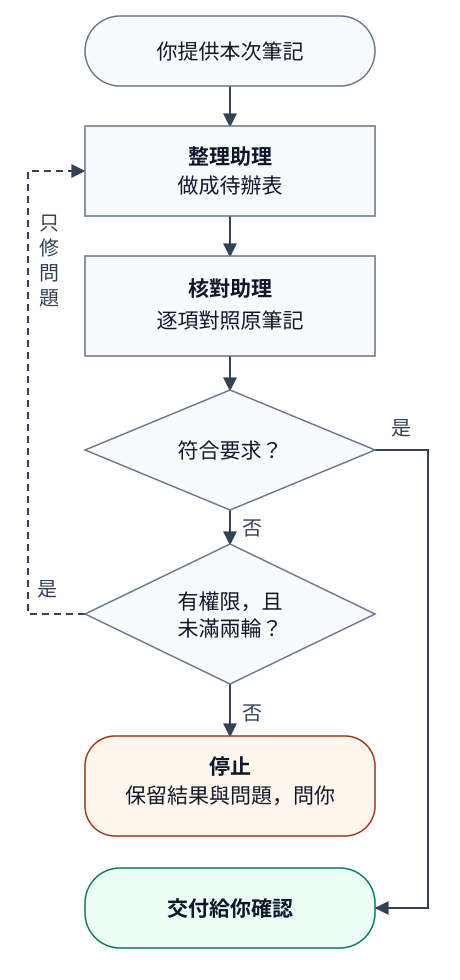

從零開始養成我的 AI 管家
副標：用一個或少數幾個主流 AI 工具，建立可交辦、可驗收、可累積的工作方法。
書籍資訊
| 項目 | 內容 |
|---|---|
| 版本 | 免費公開版 v1.1 |
| 最後更新 | 2026-10-29 |
| 作者 | Farceur Liu |
| 適用讀者 | 第一次使用 AI、沒有技術背景，想用 AI 協助工作或日常事務的人；主管與小團隊可依需要選讀 |
| 核心主題 | 從第一件低風險任務開始，練習交辦、驗收與修正，保存成模板與可重複使用的工作說明（Skill），再認識能使用工具執行工作的 Agent |
| 建議用途 | 零基礎自學、日常工作練習；團隊可選用相關章節作為入門教材 |
| 不適合用途 | 取代法律、財務、資安、醫療、人事或正式管理決策 |
本書簡介
很多人開始用 AI 時，第一個問題是：「還有沒有更好用的工具？」
但常見的困難是：不知道怎麼交辦、提供資料、避免 AI 亂猜、驗收第一版，以及保存好用的方法。
剛開始可以先用一個或少數幾個主流工具，練習交辦、驗收與修正。等到知道現有工具缺什麼，再評估是否需要其他工具。
本書從第一件低風險任務開始，帶你練習把工作交給 AI：選任務、寫交辦、找錯誤、修第二版、保存模板，再判斷哪些流程值得做成 Skill，哪些適合讓 Agent 在授權範圍內執行。
前言
AI 很容易讓人產生兩種誤解。
第一種誤解是：只要找到對的工具，工作就會自動變簡單。
第二種誤解是：AI 既然很強，就可以直接替人做判斷、承諾和決定。
工具會改版，功能會變，模型也會犯錯。即使用了合適的工具，仍要交代清楚、檢查成果，並設定資料與操作邊界。
這本書從小任務開始，練習交辦、限制風險、修正成果，再把跑通的方法留下來。工具介紹只為了幫你判斷怎麼做，不需要照著排行榜逐一試用。
你不需要一次學會所有功能。先完成一件低風險任務，知道 AI 哪裡幫得上忙、哪裡會亂補、哪裡必須由人確認。這就是養成 AI 管家的起點。
如果你擔心被 AI 取代，這本書不能保證某個職位永遠不變。你可以練習的是：定義問題、提供脈絡、設計流程、驗收成果、判斷風險，並保存可重複使用的方法。這些能力有助於你運用不同工具完成工作，但不代表工作風險就此消失。
公開版聲明
本書提供一般性的 AI 工作方法與安全觀念，不構成法律、財務、資安、醫療或人事建議。若涉及公司資料、客戶資料、個資、金流、合約、帳號權限、系統操作、腳本執行或檔案刪除，請遵守你所在組織的政策、授權範圍與 IT / 資安規範。
不要用本書範例繞過組織規範、安裝不明工具、執行看不懂的腳本，或處理未授權資料。工具名稱、介面與功能會改版，請以實際產品文件與組織規範為準。
本書提到的 ChatGPT、Claude、Gemini、Codex、Claude Code、Gemini CLI、Notion、Gmail、Outlook 等名稱，屬於各自權利人所有。本書不代表與上述工具、平台或公司有合作、授權、背書或保證關係。
公開版允許免費閱讀與分享原始連結。未經作者明確授權，不得將全文或大幅改作內容作為商業課程、付費教材、出版品、顧問交付物或企業內訓教材再販售。引用局部內容時，請保留書名與來源連結。
目錄
前置頁：
- 書籍資訊
- 本書簡介
- 前言
- 公開版聲明
主文：
- 養成路線：這本書怎麼用
- 養成前先知道：AI 管家不是替你負責的人
- 第一天：10 分鐘交辦第一件低風險任務
- 新手禁區：第一次不要交辦的事
- 認識你的 AI 管家：工具、用法、Skill
- 選任務：什麼工作適合拿來養成
- 交辦：把任務講清楚
- 入門訓練：照著做完三輪
- 工作場景訓練：讓管家熟悉工作日常
- 錯誤診斷：好交辦與壞交辦
- 驗收：不要照單全收
- 調教：讓第二版更接近你的工作方式
- 安全邊界：什麼資料和動作不能交出去
- 交辦品質分級
- AI 回答可信度標記
- 對外回覆前檢查清單
- 常見任務模板庫
- 紅燈規則：什麼時候要停下來問人
- 進階養成：把好用方法變成 Skill
- 從 Skill 到 Agent：交給 AI 一件完整的工作
- 團隊養成：小團隊導入與成果保存（選讀）
- 一頁速查表
- 結語：從工具使用者變成管家訓練者
附錄：
- 附錄 A. Skill 範例一：高風險客戶訊息整理與應對建議（選讀）
- 附錄 B. Skill 範例二：費用報銷資料整理與缺件檢查（選讀）
- 附錄 C. Skill 範例三：指定 Email 搜尋條件與附件安全檢查（選讀）
- 附錄 D. Skill 範例四：電腦容量不足安全清理（選讀）
0. 養成路線：這本書怎麼用
本章學習目標：
- 理解本書的使用方式與學習順序。
- 知道 AI 管家養成不是一次設定，而是交辦、驗收、調教與保存。
- 先建立「工具少而精、方法可遷移」的核心觀念。
這裡的「養成」，是透過反覆交辦與修正，讓 AI 的成果逐漸符合你的工作方式；取名字或設定人格並不會自動帶來這種效果。你可以這樣開始：
- 先讓它完成一件低風險小任務。
- 你驗收它的第一版。
- 有問題就具體指出，讓它修正。
- 你把好用的交辦方式保存成模板。
- 重複幾次後，把穩定流程沉澱成 Skill。
不用一次讀完。先照前面的練習完成一件工作，再依需要讀後面的場景、模板與進階章節。
0.1 如果你是第一次用 AI 管家
你可以跟著一件事往下讀：第 2 章先把工作坊會議筆記整理成待辦，學會看出錯誤、請 AI 修正；第 18 章把好用方法存起來；第 19 章再看怎麼讓助理接著做、分工核對，以及在有問題時停下來。其他工作場景可按需要選讀，不必一次學完。
請照這個順序讀：
- 第 1 章：先知道 AI 管家的責任邊界
- 第 2 章：照著完成第一件低風險任務
- 第 6 章：學會交辦公式
- 第 7 章：做完三個入門訓練
- 第 10 章：用驗收四問檢查成果
第一次先練習交辦與驗收：
交辦一次 → 檢查 AI 第一版 → 有問題就指出並修正 → 確認成果能不能用。
如果第一版已符合要求，就可以使用，不必為了練習而硬改第二版。
0.2 如果你只是想找模板
請直接看：
- 第 8 章：工作場景訓練
- 第 16 章：常見任務模板庫
- 第 21 章：一頁速查表
使用模板時，至少補上三件事：
- 這次任務的目標
- AI 可以參考的資料
- 不能承諾、不能推測、不能修改的邊界
0.3 如果你要處理客戶、金流、個資或對外內容
請先看：
- 第 3 章：新手禁區
- 第 12 章：安全邊界
- 第 15 章：對外回覆前檢查清單
- 第 17 章：紅燈規則
這類任務的原則是：
AI 可以協助整理、檢查、產草稿，但不能替公司做正式承諾或最終判斷。
0.4 依讀者身分選路線
可以依目前的需要選擇讀法。
| 讀者狀態 | 建議讀法 | 讀完應該做到 |
|---|---|---|
| 第一次使用 AI 的工作者 | 先讀第 1、2、6、7、10 章 | 完成一件低風險任務，並能要求 AI 修第二版 |
| 只想找交辦文字（prompt）或模板的人 | 先看第 8、16、21 章 | 找到可改寫的模板，並補上自己的資料、限制與驗收方式 |
| 想讓 AI 處理電腦檔案的人（進階選讀） | 先讀第 4、8.13、8.15、18 章 | 分清聊天介面與能處理檔案的 AI 工具，知道各自適合的任務 |
| 想做 Skill 的人（進階選讀） | 先完成第 7 或第 8 章一個案例，再讀第 18 章與附錄 | 從已跑通流程復盤出 Skill，而不是一開始就硬寫 Skill |
| 想讓 Agent 接手工作的讀者（進階選讀） | 先完成一個可驗收案例，再讀第 19 章 | 說清可操作範圍、停止條件與完成證據 |
| 主管或小團隊導入者 | 先讀第 3、12、17、20、21 章 | 建立低風險導入節奏、共用模板與人工核准邊界 |
新手先練交辦、驗收與修正。Skill、Agent 與命令列工具可以之後再看，不是開始使用 AI 的必要條件。
0.5 七天練習路線
如果你想用一週開始養成 AI 管家，可以照這個節奏做：
| 天數 | 練習目標 | 對應章節 |
|---|---|---|
| Day 1 | 完成第一件低風險任務 | 第 2 章 |
| Day 2 | 檢查第一版，有需要再修正 | 第 6、10、11 章 |
| Day 3 | 把一段客戶或使用者訊息整理成內部摘要 | 第 7.2、8.2 章 |
| Day 4 | 檢查一段對外回覆草稿的風險 | 第 7.3、15 章 |
| Day 5 | 從第 8 章挑一個自己的工作場景試跑 | 第 8 章 |
| Day 6 | 把好用交辦保存成模板 | 第 16、20 章 |
| Day 7 | 復盤是否值得變成 Skill | 第 18 章 |
七天後不一定要產出正式 Skill。更實際的成果是：你至少有一個可重複使用的交辦模板，知道 AI 容易錯在哪裡，也知道什麼情況要停下來問人。
0.6 養成階段
| 時間 | 目標 | 你要完成的事 |
|---|---|---|
| 第一天 | 讓 AI 管家完成第一件低風險任務 | 用第 2 章流程整理一段會議紀錄或筆記 |
| 第一週 | 建立交辦與驗收手感 | 完成第 7 章三個入門訓練 |
| 第二週 | 讓管家熟悉自己的工作場景 | 從第 8 章選 1-2 個工作場景試用 |
| 第一個月 | 沉澱個人模板 | 保存 3 個真的有用的 prompt 與驗收方式 |
| 之後 | 讓個人經驗變成團隊資產 | 把多人共用、重複發生、容易出錯的流程整理成模板或 Skill |
0.7 自學完成標準
讀完後，不必記住所有工具名稱或馬上做出 Skill。先確認自己能做到：
- 能挑出一件低風險任務，交給 AI 先跑第一版。
- 能寫出清楚的交辦：目標、資料、邊界、輸出格式、驗收方式。
- 能看出 AI 哪裡漏掉、亂猜或講太滿。
- 能要求 AI 修第二版，而不是只接受第一版。
- 能分辨哪些資料不能直接貼給 AI。
- 能判斷這次用一般聊天介面（Chat）就夠，還是需要能處理檔案的工具，或先保存成模板。
- 能把一次好用的交辦方式留下來，下次不用重新開始。
能完成這些事，就可以開始把同一套方法用到其他工作。
0.8 這本書的核心句
比起背 prompt，更值得練習的是：
- 怎麼把工作講清楚
- 怎麼給 AI 足夠資料
- 怎麼限制 AI 不要亂補
- 怎麼驗收 AI 成果
- 怎麼把好用流程保存下來
不需要有 AI 使用經驗。遇到工作時，可以先問自己：
這件事有哪些部分適合先交給 AI？資料能不能提供？結果要怎麼驗收？
先把少數工具用熟，練好交辦、驗收與修正，通常比同時摸索很多工具更容易開始。
很多人會問：「某某 AI 工具好不好用？可不可以拿來做某件事？」
可以先檢查現有工具能不能完成。摘要、改寫、分類等任務，ChatGPT、Claude、Gemini 這類主流 AI 通常就能協助；是否需要其他工具，要看資料、功能與實際結果。
使用前要確認資料可以提供、組織允許使用，而且工具環境符合安全要求。不要把個資、密碼、客戶資料、公司機密或未授權資料直接貼入工具。
0.9 這本書的學習主線
本書從交辦練習，逐步談到保存方法與委託執行：
| 層級 | 你在做什麼 | 重點 |
|---|---|---|
| 聊天 | 問 AI 一個問題 | 適合快速問答，仍要檢查內容 |
| 交辦 | 給目標、資料、邊界、驗收方式 | 讓 AI 產出可修改的第一版 |
| 工作流 | 把重複任務跑成固定流程 | 每次都能用類似方式處理 |
| Skill | 把跑通的工作流寫成 AI 可重複使用的說明書 | 讓個人經驗變成可交接資產 |
| Agent | 委託 AI 使用可用工具，執行多步工作並檢查結果 | 需要授權範圍、停止條件與完成證據，詳見第 19 章 |
先把一件低風險工作交辦清楚，確認成果有用、能省時間，再考慮固定工作流、Skill 或 Agent。它們不必每一項都做，依實際需要選擇。
0.10 工具介面會變，方法不要綁死
ChatGPT、Claude、Gemini、Codex 或其他 AI 工具的按鈕、上傳方式、模型名稱都可能改版。這本書不要求你記某個畫面在哪裡，而是學會一套不容易過期的方法：
- 先判斷任務風險
- 再準備資料
- 接著寫清楚目標、邊界與輸出格式
- 收到結果後驗收
- 有問題就具體調教
- 好用才保存成模板
如果工具介面改了，只要這套流程還在，你就能換工具繼續使用。
0.11 本書不是工具大全
工具介紹看不完，先把一個或少數幾個主流工具用在日常工作，更容易知道自己還缺什麼。
換工具前，先檢查：這次沒做好，是工具限制，還是交辦資料、邊界或驗收不清楚？
0.12 先用三個小故事理解這本書
故事一：一直找工具的新手
小安剛開始想把 AI 用進工作，聽說 AI 很好用。她看到別人用 ChatGPT、Claude、Gemini，又看到網路上有人推薦簡報 AI、客服 AI、報表 AI、筆記 AI。
她第一個反應是：「我是不是每種工作都要找一個專門工具？」
結果她花了很多時間註冊工具、研究介面、比較功能，但真的開始做事時，還是只會問：
幫我整理一下。AI 給她一段看起來很完整的摘要，但沒有待辦、沒有風險、沒有待確認事項，也不知道能不能交給主管看。
後來她改成這樣交辦：
請把這段會議紀錄整理成主管看的追蹤摘要。
請分成：決議、待辦、負責人、期限、風險、待確認事項。
沒有提到的資訊請寫「未指定」，不要自行補充。這次，同一個工具就產出了比較能用的第一版。小安先把用途與格式說清楚，才知道工具究竟能做到什麼。
故事二：不敢用 AI 的客服團隊成員
小林在客服工作，收到一段客戶訊息。客戶很生氣，要求退款，還說要投訴。
小林不敢用 AI，因為他怕 AI 亂回客戶。
小林可以先不讓 AI 回客戶，只請它協助整理案件。
他可以這樣交辦：
先不要幫我回覆客戶。
請整理這段客戶訊息中的已確認事實、客戶訴求、情緒風險、不能承諾事項，以及回覆前需要主管確認的問題。這次交辦只請 AI 整理、檢查與準備材料，沒有授權它替人承諾。高風險工作也能拆出這類可協助的部分。
故事三：把一次好用變成下次可用
小婷每週都要整理一次合作申請資料。第一次她請 AI 幫忙分類哪些申請資料完整、哪些缺件、哪些要人工再確認。
第一版有用，但也有錯：AI 把某些「待確認」寫成「可進入下一步」。
小婷指出問題，要求 AI 第二版把資料分成：
- 已確認
- 待補件
- 需人工確認
- 不可自行判斷
第二版變得可用。這時候她沒有只保存結果，而是請 AI 復盤：
請整理剛剛這次合作申請資料分類的處理步驟、輸出格式、常見錯誤、驗收方式和停止條件。這份復盤之後就能變成團隊模板，甚至變成 Skill。
指出問題後，把修正規則與做法保存下來，下次就有依據可用；只改當次答案，這些經驗可能不會被保留。
本章練習與自我檢查：
- 用一句話寫下你最想讓 AI 管家幫忙的工作。
- 判斷這件工作目前是聊天、交辦、工作流，還是可能變成 Skill。
- 檢查：你是否知道這本書不是工具大全，而是工作方法書？
1. 養成前先知道：AI 管家不是替你負責的人
本章學習目標：
- 分清 AI 可以協助的工作與人必須負責的判斷。
- 養成先檢查第一版，再決定能否使用的習慣。
- 知道哪些成果值得保存成模板或 Skill 材料。
1.1 這本書的目的
不需要先成為 AI 專家。這本書希望幫你做到：
讓每個人都能把日常工作中「可以先整理、先產稿、先檢查、先拆解」的部分，交給 AI 管家做第一輪，自己負責判斷、修正與驗收。
1.2 養成 AI 管家的三個原則
原則一：先交低風險工作
剛開始不要把退款、報價、對外公告、客戶正式回覆、合約或個資案件交給 AI。先從會議紀錄、內部摘要、報表初步整理、文件草稿檢查開始。
原則二：第一版先當待驗收稿
第一次練習時，先把第一版當作待驗收稿，檢查有沒有漏項、亂補或講太滿。通過任務所需的檢查後，成果可以直接使用；是否可用，要看內容與證據，不是看它叫第一版還是第二版。
原則三：好用方法要保存
如果某次交辦真的省時間，不要只保存結果。要保存你怎麼交辦、AI 哪裡錯、你怎麼修、最後怎麼驗收。這些才是以後變成模板或 Skill 的材料。
1.3 AI 管家可以幫你什麼
AI 管家適合做：
- 把雜亂內容整理成清楚架構
- 幫你產出文件第一版
- 幫你檢查邏輯、語氣、遺漏
- 幫你比較方案
- 幫你拆工作、排優先順序
- 幫你把重複流程整理成標準作業程序（SOP）
- 幫你把複雜內容改成別人看得懂的版本
1.4 AI 管家不能替你負責什麼
AI 不能替你負責：
- 最終判斷
- 對外承諾
- 金流、報價、退款
- 人事、法律、合約判斷
- 個資、密碼、權限
- 刪除、送出、發布、修改正式資料
AI 可以準備判斷材料，決策責任仍由有權限的人承擔。
本章練習與自我檢查：
- 列出一件你想交給 AI 的工作，標出人要負責的最後判斷。
- 把「請 AI 幫我決定」改寫成「請 AI 幫我整理判斷材料」。
- 檢查：你是否仍把 AI 第一版當成正式答案？
2. 第一天：10 分鐘交辦第一件低風險任務
本章學習目標：
- 完成第一件低風險 AI 交辦任務。
- 學會用目標、資料、限制與輸出格式寫出第一版 prompt。
- 練習檢查 AI 第一版並要求第二版。
這一章是給第一次開始使用 AI 管家的人。請先選低風險、資料不敏感、就算 AI 做錯也不會造成客戶或公司損失的工作。
2.1 第一步：選一件低風險工作
適合第一次練習的任務：
- 整理一段會議紀錄
- 把自己的零散筆記整理成待辦
- 改寫一段內部文字
- 檢查一份文件草稿有沒有漏
- 把一段需求描述拆成問題清單
不適合第一次練習的任務：
- 回覆真實客戶
- 判斷是否退款
- 修改正式系統資料
- 分析含有完整個資的內容
- 送出公告、報價、合約或正式信件
2.2 第二步：準備一小段資料
第一次不要準備太多資料。建議用 300-800 字，讓你看得懂 AI 有沒有漏、有沒有亂補。
可以使用這類資料：
今天會議討論三件事：
1. 下週線上工作坊報名頁文案還沒確認，行銷週三前提供新版。
2. 參加者名單匯出欄位有缺，專案負責人要整理需要補的欄位。
3. 客服 / 行政近期收到幾件報名流程相關問題，需要整理常見問答。2.3 第三步：套用萬用交辦格式
第一次請直接照這段貼：
請幫我把以下內容整理成可執行待辦。
目標：
我想知道接下來有哪些事情要做、誰可能負責、哪些地方還不清楚。
資料：
【貼上你的會議紀錄、筆記或文字】
限制：
- 不要補充資料中沒有出現的資訊
- 不確定的地方請寫「待確認」
- 不要替我做最終決定
- 不要新增承諾或日期
請輸出：
1. 重點摘要
2. 待辦事項
3. 可能負責角色
4. 已知期限
5. 待確認問題
6. 建議下一步2.4 第四步：看第一版，不要急著相信
收到 AI 回答後，先看四件事：
- 有沒有漏掉原文提到的重要事情
- 有沒有把沒有講的事情補進去
- 有沒有把「可能」講成「確定」
- 待辦是否真的有人可以接著做
如果有問題，指出具體位置與原因；符合要求的部分就保留。
2.5 第五步：要求 AI 修第二版
可以這樣修：
這版需要修改。
問題：
- 第三項只提到客服 / 行政收到問題，沒有指定由哪位同事整理，你卻填了具名負責人
- 待辦沒有列出需要補充哪些資料
請重寫：
- 沒有明確負責人的地方請寫「待確認」
- 每個待辦都補上「需要什麼資料」
- 不要新增原文沒有提到的日期2.6 第六步：保存好用結果
如果這次結果有用，請保存三個東西：
- 原始資料類型：例如會議紀錄、客戶訊息、報表摘要
- 交辦 prompt：你這次怎麼請 AI 做
- 驗收方式：你怎麼判斷它能不能用
連同答案一起保存交辦方式與驗收標準，下次遇到同類工作就能沿用。
本章練習與自我檢查：
- 找一段 300-800 字低風險資料，照本章模板交辦一次。
- 檢查 AI 第一版；如果有漏項或錯誤，指出問題並要求修正。
- 檢查：你是否保存了交辦方式，而不只是保存結果？
3. 新手禁區：第一次不要交辦的事
本章學習目標：
- 認識新手最常踩到的高風險任務。
- 學會把「直接決定」改成「整理事實與待確認」。
- 避免把敏感資料、公司政策或正式回覆交給 AI 直接處理。
第一次使用 AI 管家，先避開以下高風險交辦。就算 prompt 寫得很完整，也不能取代必要授權與專業判斷。
本章先說明第一次練習要避開的事。完整安全規則見第 12 章，對外回覆檢查見第 15 章，需要停下來問人的條件見第 17 章。
3.1 不要把 AI 當最終決策者
不要這樣交辦：
幫我決定這個客戶要不要退款。可以改成：
請整理這個案件的已知事實、客戶訴求、公司已承諾事項、待確認資料，以及需要主管判斷的地方。不要替我決定是否退款。3.2 不要讓 AI 直接對外送出
不要這樣交辦：
幫我回覆客戶，直接寄出。可以改成：
請先幫我產出客戶回覆草稿，並列出可能有風險、需要主管確認、不能承諾的地方。不要替我送出。3.3 不要貼敏感資料
第一次練習不要貼：
- 完整客戶姓名、電話、地址
- 密碼、驗證碼，以及程式或服務用來驗證身分的金鑰與憑證（例如 API key、token）
- 完整信用卡號或銀行帳號
- 未公開合約、財務資料、人事資料
- 公司尚未公開的策略或價格
如果一定要請 AI 協助整理，先移除或代換能辨識個人的資料，也就是去識別化。例如：
客戶 A，某次預約服務，於 5/1 反映完成時間延遲，要求退款。3.4 不要把 AI 的答案當公司政策
AI 可能會用看起來合理的文字補出不存在的規則，例如：
一般公司通常會在三個工作天內完成退款。如果公司沒有明確規則，這句就不能當作依據。正確做法是要求 AI 標示：
公司規則未提供，需向主管或財務確認。3.5 不要用 AI 掩蓋不清楚的流程
公司規則、資料來源或負責人不明時，先請 AI 整理缺口：
請幫我列出目前資料缺口，以及我應該向誰確認哪些問題。本章練習與自我檢查：
- 把一個高風險請求改寫成只整理事實與待確認事項。
- 列出三種你不應直接貼給 AI 的資料。
- 檢查：你是否能看出 AI 自行補公司政策的風險？
4. 認識你的 AI 管家：工具、用法、Skill
本章學習目標：
- 分清工具、AI 管家用法與 Skill 的差別。
- 知道一般 Chat 與工作區 / CLI 型 AI 的使用邊界。
- 建立先把少數主流工具用深，再評估新工具的判斷方式。
4.1 不是聊天機器人，是工作助理
很多人一開始使用 AI，只會問：
幫我想一下。
幫我整理一下。
幫我寫一下。
如果沒有交代用途，AI 很難知道這次工作要做到什麼程度。可以從一般問答，進一步改成有目標的交辦。
聊天是：
問一個問題，拿一個答案。
交辦是：
給它目標、資料、邊界和驗收標準，讓它產出一份可以繼續修改或使用的工作成果。
4.2 AI 管家的角色
你可以把 AI 管家想成一個助理。
它可以：
- 先讀資料
- 先分類
- 先整理
- 先寫初稿
- 先列問題
- 先提醒風險
但你要負責：
- 判斷它有沒有看錯
- 判斷它有沒有漏掉
- 判斷它有沒有亂補
- 判斷它產出的東西能不能用
- 告訴它下一版怎麼修
4.3 最重要的觀念
收到成果先驗收，有問題就具體指出，通過檢查後再使用。AI 可以協助完成工作，但不能替你承擔決策責任。
4.4 先分清楚：工具、用法、Skill
很多人一聽到 AI，會先問：「要用哪個工具？」
先分清楚三個名詞：
- 工具：你實際使用的平台，例如 ChatGPT、Claude、Codex、Gemini，或公司、組織授權的 AI 工具。
- AI 管家：一種使用方式，也就是把任務交辦給 AI 跑第一版。
- Skill：把已經跑通、驗收過的工作流，寫成下次可以重複使用的標準說明。
這三者分清楚，換工具時也比較知道哪些做法可以沿用。第 19 章會再介紹 Agent：如何在授權範圍內，讓 AI 使用工具接續執行工作。
4.5 你需要的工具不多，先把少數工具用深
很多人會問：
- 某某 AI 工具好不好用？
- 這個工具可不可以幫我做報表？
- 那個工具是不是比較適合寫文案？
- 有沒有專門做簡報、客服、摘要、文件整理的 AI？
先把要做的事說清楚，再查現有工具能不能處理。例如：
| 想做的事 | 不一定需要新工具，先試著這樣交辦 |
|---|---|
| 整理會議紀錄 | 請 AI 分成決議、待辦、負責人、期限、待確認 |
| 檢查報表異常 | 請 AI 找出異常、可能原因、需要補查資料 |
| 產出客戶回覆草稿 | 請 AI 保留原意、不新增承諾、列出風險 |
| 整理需求文件 | 請 AI 分成目的、範圍、未定義問題、風險 |
| 建立 SOP | 請 AI 寫出適用情境、步驟、注意事項、完成檢查 |
| 產生 Skill 草稿 | 請 AI 復盤已跑通流程，再整理成 Skill |
這些事 ChatGPT、Claude、Gemini 這類主流工具通常都能處理。差別在於你有沒有給它：
- 清楚目標
- 足夠資料
- 輸出格式
- 邊界限制
- 驗收標準
如果你只說「幫我整理一下」，換再多工具也不會穩定。
小故事：阿哲的工具清單
阿哲負責活動成效整理。他看過很多 AI 工具介紹，收藏了一整排連結：有做簡報的、有整理會議的、有分析報表的、有寫文案的。
每次遇到新任務，他第一個動作都是問：「有沒有更適合這件事的 AI？」
有一次主管要他整理一份活動成效報表。他又準備去找新的報表 AI。後來同事請他先把需求講清楚：
我有一份活動成效報表，包含報名數、實際參與數、轉換率、回饋摘要和活動前後比較。
請幫我整理成主管看的摘要。
請分成：主要成效、異常項目、可能原因、需要補查資料、下一次活動建議。
不要把相關性寫成因果，不要補資料中沒有的成本。結果他原本常用的主流 AI 就做出一份可修改的第一版。
阿哲把這次交辦方式保存下來，下次就不用重新摸索。專門工具仍可能有價值，但可以等現有工具確實不足時再評估。
4.6 什麼時候才需要新工具
先判斷問題出在哪裡：是工具能力不足，還是資料、交辦方式或流程不清楚？
可以用這張表判斷：
| 情況 | 判斷 | 下一步 |
|---|---|---|
| 只是摘要、改寫、分類、拆解、檢查 | 多半不需要新工具 | 先用主流 AI 練交辦 |
| 需要讀取公司系統、Email、行事曆、Notion、Jira | 可能需要資料連接功能（connector）或授權工具 | 先確認權限、安全與資料邊界 |
| 需要大量固定格式批次處理 | 可能需要模板、Skill 或自動化 | 先跑人工驗收版，再考慮工具化 |
| 需要直接送出、刪除、修改資料 | 高風險 | 不要只靠 AI，自動化前要有人工核准 |
| 主流 AI 已試過，但穩定失敗 | 可能是資料、流程或工具限制 | 先分析失敗原因，再評估新工具 |
問新工具前，先問自己五個問題：
- 我有沒有把任務目標講清楚？
- 我有沒有給足夠資料？
- 我有沒有要求輸出格式？
- 我有沒有設定不能亂猜、不能承諾的邊界？
- 我有沒有驗收第一版並要求修第二版？
如果多數還沒做到，先補齊交辦再試，才能看出工具是否真的不適合。
4.7 AI 管家分工表
| 角色 | 負責什麼 | 不負責什麼 |
|---|---|---|
| 人 | 設定目標、提供資料、畫出邊界、驗收結果 | 不把判斷力完全交出去 |
| AI 管家 | 整理資料、拆解任務、產出第一版、列出風險與待確認事項 | 不做最終決策、不對外承諾 |
| Skill | 保存跑通的做法，讓下次不用重講 | 不取代人工驗收，不保證所有情境都適用 |
用一句話記：
人決定方向，AI 跑第一版，Skill 保存做法。
4.8 Chat 模式和工作區 / CLI 型 AI 管家的差別
這兩節是進階選讀。工作區是放置任務檔案的資料夾；CLI 是命令列介面，也就是透過輸入指令操作工具。你不必先學會命令列，才能使用 AI。
選工具時，要看它能讀取哪些資料、使用哪些功能，以及成果要留在哪裡。
一般聊天介面可以做問答、改寫與摘要；如果當前版本提供檔案處理或其他功能，也可能產出檔案。工作區 / CLI 型工具通常更適合直接處理專案檔案、執行命令並檢查結果。
兩者都有可能完成可交付成果，實際能力取決於版本、方案、啟用功能與權限，不能只看工具名稱。
| 面向 | 一般 Chat | 工作區 / CLI 型 AI 管家 |
|---|---|---|
| 代表工具 | ChatGPT、Claude、Gemini 的一般聊天介面 | Codex、Claude Code、Gemini CLI |
| 適合任務 | 問問題、改寫、摘要、腦力激盪、產草稿 | 讀多個檔案、改文件、改程式、跑命令、整理資料夾 |
| 主要成果 | 文字回答；有相應功能時也可產出檔案 | 工作區檔案、修改紀錄、檢查結果 |
| 上下文來源 | 對話內容，以及當前可用的上傳或連接功能 | 對話內容、授權可讀的工作區檔案、專案規則 |
| 風險 | 可能亂補、講太滿；連接其他功能後也要確認操作影響 | 除內容錯誤外，也可能改到檔案或執行命令 |
| 使用重點 | 問清楚、要求格式、檢查答案 | 限定範圍、先讀不改、確認後再修改、檢查實際修改差異（diff） |
4.9 什麼時候用 Chat，什麼時候用 Codex / Claude Code / Gemini CLI
先用一般 Chat 就夠的情況：
- 問一個概念
- 改寫一段文字
- 整理一小段資料
- 幫你想標題、摘要、回覆方向
- 產出 prompt 或 Skill 草稿
- 檢查一段貼上來的內容
適合用 Codex、Claude Code、Gemini CLI 的情況：
- 要 AI 讀整個資料夾或多個檔案
- 要修改 Markdown（純文字標記格式）、文件、程式碼或設定檔
- 要跑測試、檢查格式或執行命令
- 要整理程式碼儲存庫（repo）、專案資料夾或本機文件
- 要把 Skill 寫成實際檔案
- 要把成果留在工作區，而不是只要一段回答
先依任務需要選擇：只處理一段內容，聊天介面通常就夠；要持續讀改本機檔案或執行命令，可評估工作區型工具。再核對當前工具實際具備的功能與權限。
4.10 第一次使用工作區 / CLI 型 AI 管家的安全交辦
因為工作區 / CLI 型 AI 管家可能真的讀檔、改檔、跑命令，所以第一次使用時不要一開始就叫它「直接改」。
先用只讀交辦：
請先不要修改檔案。
請先讀這個資料夾中的相關文件，理解目前內容與結構。
目標：
我想完成＿＿＿＿＿＿。
請先回報：
1. 你讀到了哪些檔案
2. 目前內容的主線
3. 你認為需要調整的地方
4. 你建議修改哪些檔案
5. 哪些地方需要我確認
等我確認後，再開始修改。確認方向後，再交辦修改：
請依照剛剛確認的方向修改檔案。
限制：
- 只修改＿＿＿＿＿＿
- 不要改動無關檔案
- 不要刪除原本重要內容
- 不要下載或安裝外部工具
- 不要碰密碼、token、API key 或個資
- 完成後請檢查檔案結構或格式
完成後請回報：
1. 修改了哪些檔案
2. 新增或調整了哪些內容
3. 做了哪些檢查
4. 有沒有未完成或需要人工確認的地方只要工具能讀改檔案或執行命令，就要說清楚操作範圍、禁止事項與驗收方式。
本章練習與自我檢查：
- 選一個任務，判斷用一般 Chat 就夠，還是需要工作區型 AI。
- 問自己五個新工具判斷問題，再決定是否真的需要新工具。
- 檢查：你是否把工具能力問題和交辦品質問題分清楚？
5. 選任務：什麼工作適合拿來養成
本章學習目標：
- 判斷哪些任務適合拿來養成 AI 管家。
- 分辨整理、改寫、檢查、比較、拆解與 SOP 型任務。
- 避開一開始不適合交給 AI 的任務。
5.1 適合交辦的工作類型
A. 整理型工作
適合內容：
- 會議紀錄
- 客戶訊息
- LINE 對話
- 表單回覆
- 訪談紀錄
- 雜亂筆記
適合交辦：
幫我把這些內容整理成重點、待辦、風險、需要確認事項。B. 改寫型工作
適合內容：
- 對客戶回覆
- 內部公告
- 活動文案
- 說明文字
- SOP 文字
- 簡報講稿
適合交辦：
幫我把這段文字改成比較清楚、禮貌、可直接傳給客戶的版本，但不要新增原文沒有的承諾。C. 檢查型工作
適合內容：
- 文件草稿
- 客戶回覆
- 報告
- SOP
- 常見問答（FAQ）
- 對外公告
適合交辦：
幫我檢查這份內容有沒有邏輯矛盾、資訊缺漏、語氣不適合、容易被誤解的地方。D. 比較型工作
適合內容：
- 方案比較
- 工具比較
- 廠商比較
- 流程比較
- 活動規劃比較
適合交辦：
幫我比較這幾個方案的優點、缺點、風險、成本、適合情境，最後給我建議。E. 拆解型工作
適合內容：
- 專案
- 活動
- 主管交辦事項
- 複雜任務
- 跨部門流程
適合交辦：
幫我把這件事拆成可執行待辦，列出順序、負責角色、風險、需要先確認的問題。F. SOP 型工作
適合內容：
- 重複發生的流程
- 客服處理
- 表單審核
- 報表整理
- 申請資料檢查
- 活動準備
適合交辦：
幫我把這個流程整理成 SOP，包含適用情境、操作步驟、注意事項、常見錯誤、完成檢查。5.2 不適合直接交給 AI 的工作
以下事情可以請 AI 協助整理資訊，但不能讓 AI 自己決定：
- 是否退款
- 是否報價
- 是否承諾客戶
- 是否刪除資料
- 是否改權限
- 是否寄出正式信件
- 是否發布公告
- 是否簽約
- 是否採購
- 是否處理敏感個資
可以：
幫我整理這個退款案件的背景、爭議點、客戶訴求、公司已承諾事項。不可以：
幫我決定要不要退款，然後直接回覆客戶。本章練習與自我檢查：
- 從本章六類任務中選一類，找出你工作中的真實例子。
- 判斷這個例子風險高低、資料是否敏感、人是否能驗收。
- 檢查：你是否避開了第一次不該交辦的高風險任務？
6. 交辦：把任務講清楚
本章學習目標：
- 掌握交辦的四個核心元素：目標、資料、邊界、驗收。
- 學會把模糊請求改成可執行任務。
- 能套用萬用交辦格式處理日常工作。
6.1 四件事：目標、資料、邊界、驗收
每次交辦 AI，盡量包含四件事。
1. 目標
你要它完成什麼？
幫我把這份會議紀錄整理成待辦清單。2. 資料
它可以參考什麼？
以下是今天的會議紀錄，包含討論內容和決議。3. 邊界
它不能做什麼？
不要補充紀錄中沒有提到的內容；不確定的地方請列為待確認。4. 驗收
你希望它輸出成什麼樣子？
請輸出成：決議、待辦事項、負責人、期限、風險、待確認問題。6.2 萬用交辦格式
可以直接複製：
請你協助我完成以下任務。
目標：
我要你幫我＿＿＿＿＿＿。
資料：
以下是你可以參考的內容：
＿＿＿＿＿＿
邊界：
- 不要補充資料中沒有出現的資訊
- 不確定的地方請標示「待確認」
- 不要替我做最終決定
- 不要新增承諾
輸出格式：
請分成：
1. 重點摘要
2. 已確認事項
3. 待辦事項
4. 風險
5. 需要確認的問題
6. 建議下一步本章練習與自我檢查：
- 用目標、資料、邊界、驗收四欄重寫一段舊 prompt。
- 檢查你的 prompt 是否有指定輸出格式。
- 檢查：AI 做錯時，你是否知道要從哪一欄補強？
7. 入門訓練：照著做完三輪
本章學習目標：
- 透過三個入門練習建立 AI 管家使用手感。
- 看懂 AI 在會議、客戶訊息與對外草稿中的常見錯誤。
- 練習從第一版修到可用第二版。
請依序試做三個練習。每個練習都會示範：
- 原始資料長什麼樣子
- 應該怎麼交辦
- 好的輸出大概長什麼樣子
- 人要怎麼驗收
- 下一輪要怎麼修正 AI
7.1 練習一：把會議紀錄整理成待辦
練習目標
學會把雜亂內容整理成可以追蹤的工作清單。
情境故事
小安第一次參加專案籌備會議，會後只記得大家講了很多事：報名頁、參加者名單、常見問答、設計出圖、預算、推廣渠道。
她不知道怎麼整理，直覺想請 AI：
幫我整理這份會議紀錄。但這樣問，AI 可能只會給她一段摘要。摘要看起來清楚，卻不能直接拿來追蹤。
這次要整理的是可追蹤的待辦：誰要做什麼、什麼時候做、還缺什麼。交辦時要把這個用途寫出來。
原始資料
今天討論下週線上工作坊。
行銷說報名頁標題還不夠清楚，希望改成比較像「一小時學會用 AI 整理工作」的方向，但還沒有定案。
專案負責人提到系統匯出的參加者名單缺少「是否需要課前通知」欄位，導致提醒名單整理很麻煩。
客服 / 行政說最近有幾位參加者詢問報名後是否會收到連結，希望活動前先整理常見問答。
設計說如果週三中午前有文案，就可以週四出第一版圖。
目前還沒決定活動預算，也還沒確認要主推哪些渠道。請這樣交辦
請幫我把以下會議紀錄整理成內部追蹤待辦。
目標：
我要知道目前已討論的重點、接下來要做什麼、哪些事情還沒定案。
資料：
【貼上原始資料】
限制：
- 不要補充資料中沒有提到的內容
- 沒有明確負責人的地方請寫「待確認」
- 沒有明確日期的地方請寫「未指定」
- 不要自行決定活動預算或推廣渠道
請輸出：
1. 會議重點
2. 已知待辦
3. 可能負責角色
4. 已知期限
5. 待確認事項
6. 第一個建議下一步參考輸出
1. 會議重點
- 下週線上工作坊仍在準備中，報名頁標題、參加者名單欄位、常見問答都需要補齊。
- 活動預算與推廣渠道尚未決定。
2. 已知待辦
- 調整報名頁標題方向
- 補齊參加者名單中「是否需要課前通知」欄位
- 整理報名連結與課前通知相關常見問答
- 等文案確認後製作第一版活動圖
3. 可能負責角色
- 報名頁標題：行銷
- 參加者名單欄位：專案負責人
- 常見問答：客服 / 行政
- 活動圖：設計
4. 已知期限
- 設計需要週三中午前收到文案，才能週四出第一版圖。
- 其他期限未指定。
5. 待確認事項
- 報名頁標題是否定案
- 活動預算
- 推廣渠道
- 參加者名單欄位由誰補
- FAQ 是否需要主管審核
6. 第一個建議下一步
- 先確認報名頁文案的負責人與完成時間，因為設計需要週三中午前收到文案，才能週四提供第一版圖。驗收重點
你要檢查：
- AI 有沒有漏掉「預算未定」和「推廣渠道未定」
- AI 有沒有把「可能負責角色」寫成已正式指派
- AI 有沒有新增原文沒有提到的日期
- 建議下一步是否合理，但沒有越權決定
常見錯誤與修正
如果 AI 寫：
行銷週三前完成文案，設計週四完成全部活動圖。這句把條件寫成承諾。原文只說設計需要週三中午前收到文案，才能週四出第一版圖，並沒有說行銷已承諾週三前完成。
請這樣修：
這版把未確認事項寫得太確定。
請把「行銷週三前完成文案」改成「設計需要週三中午前收到文案，文案負責人與完成時間待確認」。7.2 練習二：把客戶訊息整理成內部摘要
練習目標
學會先整理案件，不急著回覆客戶。
原始資料
客戶訊息：
我昨天預約的服務，系統顯示 8:20 會完成，結果 8:45 才收到通知。
我 9 點要開會，整個被影響。
而且我同事說他上次也遇過類似延遲。
你們是不是都沒有在管服務時間？
這次我覺得應該要退費，至少也要補償。請這樣交辦
請幫我把以下客戶訊息整理成內部處理摘要。
目標：
先不要回覆客戶。我要先知道客戶訴求、已確認事實、推測、風險，以及回覆前要查什麼。
資料：
【貼上原始資料】
限制：
- 不要承諾退款或補償
- 不要承認公司責任
- 不要把客戶同事的經驗當成已確認事實
- 不要使用刺激客戶的字眼
請輸出：
1. 客戶主要訴求
2. 客戶情緒
3. 已確認資訊
4. 合理推測
5. 待確認資訊
6. 不能直接承諾的事項
7. 建議內部下一步參考輸出
1. 客戶主要訴求
- 客戶反映預約服務延遲完成，認為影響 9 點會議。
- 客戶要求退費或補償。
2. 客戶情緒
- 明顯不滿，語氣帶有質疑。
- 客戶將本次經驗連結到「服務時間是否都有問題」。
3. 已確認資訊
- 客戶表示系統顯示 8:20 會完成。
- 客戶表示實際 8:45 才收到完成通知。
- 客戶表示 9 點有會議。
- 客戶提出退費或補償要求。
4. 合理推測
- 客戶不滿主因可能是服務延遲影響行程。
- 可能需要確認預約紀錄、系統預估完成時間與實際完成通知時間。
5. 待確認資訊
- 預約或案件編號
- 系統當時顯示的預估時間
- 實際完成或通知紀錄
- 是否曾有客服回覆
- 服務延遲的補償或退費規則
6. 不能直接承諾的事項
- 是否退費
- 是否補償
- 是否承認服務流程有疏失
7. 建議內部下一步
- 先查預約或案件紀錄，再依組織規則決定可回覆範圍。驗收重點
你要檢查：
- AI 有沒有把「我同事也遇過」當成已證實的系統性問題
- AI 有沒有直接答應退費或補償
- AI 有沒有列出需要查預約或案件紀錄
- AI 的語氣是否適合內部摘要，而不是直接對客戶說話
下一輪修正範例
如果 AI 直接寫出客戶回覆，請修正：
這次我不是要直接回覆客戶。
請改成內部摘要格式，先整理事實、推測、待確認資料與不能承諾事項。7.3 練習三：檢查對外回覆草稿的風險
練習目標
練習請 AI 檢查草稿中的風險。
原始草稿
您好，非常抱歉造成您的困擾。
這次服務延遲是我們內部管理疏失，我們會立即協助您退款。
未來我們也保證不會再發生類似問題。請這樣交辦
請幫我檢查以下對外回覆草稿是否有風險。
目標：
請只列問題和修改方向，不要直接重寫全文。
資料：
【貼上原始草稿】
請檢查：
1. 是否有不當承諾
2. 是否承認責任
3. 是否把未確認事情寫成事實
4. 是否有過度保證
5. 是否需要主管確認
限制：
- 不要新增公司政策
- 不要替我決定是否退款
- 不要假設公司已確認責任參考輸出
1. 不當承諾
- 「立即協助您退款」屬於退款承諾。若尚未確認案件紀錄與組織規則，不應直接寫。
2. 承認責任
- 「是我們內部管理疏失」屬於責任判斷。若尚未查證，不應對外承認。
3. 未確認事情寫成事實
- 草稿直接認定服務延遲原因是內部管理疏失，但目前沒有提供查證資料。
4. 過度保證
- 「保證不會再發生」承諾過滿，實務上難以保證。
5. 需要主管確認
- 涉及退款、責任歸屬、對外承諾，建議主管確認後再回覆。驗收重點
你要檢查：
- AI 是否只列問題，沒有直接重寫全文
- 有沒有抓到退款、責任、保證三個高風險點
- 有沒有提醒主管確認
- 有沒有新增不存在的公司政策
進階修正
如果你要 AI 接著提供安全版本，可以再問：
請根據剛剛列出的風險，提供一版較安全的回覆草稿。
限制：
- 不承諾退款
- 不承認責任
- 不保證不再發生
- 只說明會確認預約或案件紀錄後再回覆可協助的處理方式7.4 完成三個練習後，你應該學會什麼
做完三輪後，你的 AI 管家還不算養成完成，但你應該已經能做到：
- 把模糊任務改成具體交辦
- 區分事實、推測、待確認
- 看出 AI 有沒有亂承諾
- 看出 AI 有沒有把責任講太滿
- 用具體問題要求 AI 修第二版
如果還做不到，請不要急著把 AI 用在客戶、金流、合約、人事或正式公告上。先繼續用低風險工作練習。
本章練習與自我檢查：
- 至少完成三個練習中的一個，保存結果；有修正時，一起保留第一版與修正版。
- 標出 AI 的漏項、亂猜或講太滿之處。
- 檢查：你是否能用具體指令要求 AI 修正？
8. 工作場景訓練：讓管家熟悉工作日常
本章學習目標：
- 把交辦方法套進不同工作場景。
- 學會依任務風險選擇聊天介面、工作區型 AI，或電腦畫面操作功能（Computer Use）。
- 練習找出可信的原始資料（source of truth），設定邊界、驗收並保存方法。
8.0 先挑一個最適合練習的場景
先選一個每週都會遇到、風險不高、資料不太敏感，而且自己有能力驗收的場景，不必一次練完。
新手可以用這個順序挑：
| 優先順序 | 適合先練的場景 | 原因 |
|---|---|---|
| 1 | 會議紀錄、內部筆記、待辦整理 | 風險低，容易看出有沒有漏 |
| 2 | 內部文件改寫、SOP 初稿 | 容易修第二版，也容易保存模板 |
| 3 | 報表摘要、活動成效整理 | 可以練習分清事實、推測與待確認 |
| 4 | 客戶訊息整理 | 可以練習風險標記，但不要直接讓 AI 回覆客戶 |
| 5 | 報帳、申請資料、對帳等流程整理 | 適合進階練習，需要更清楚的安全邊界 |
| 6 | 管理系統操作手冊、電腦容量不足安全清理 | 屬於工作區或 Computer Use 進階案例，要先確認權限與安全邊界 |
電腦容量不足安全清理雖然是實用案例，但不建議當成第一個 AI 練習。它涉及本機檔案、刪除風險、雲端同步與組織設備規範，適合在已經熟悉「先只讀盤點、人工確認、再處理低風險項目」之後再練。
第 8 章的案例分成兩種讀法：
- 8.1-8.12 是短場景模板，適合拿來快速改寫試用。
- 8.13 和 8.15 是進階選讀的完整案例。先看懂人與 AI 的分工、權限邊界、停止條件和驗收方式，不必跟著操作。
讀案例時，不要只複製 prompt。請固定看六件事：
- 情境：這個案例解決什麼工作問題？
- 交辦：人提供了哪些資料、目標、限制與輸出格式？
- 可能錯誤：AI 容易漏掉什麼、亂猜什麼、承諾什麼？
- 人工驗收：人要檢查哪些事實、數字、語氣、權限或風險？
- 第二版修正：如果第一版不準，要怎麼具體要求它改？
- 保存判斷：這件事只要模板，還是未來值得做成 Skill？
試用時，把這六項換成自己的工作情境。
挑場景時先問自己：
- 這件事做錯了會不會立刻影響客戶、金流、合約或正式資料？
- 我有沒有足夠背景可以驗收 AI 的第一版？
- 這件事未來會不會重複發生？
- 如果這次做得好，能不能保存成模板？
如果答案是「風險低、我能驗收、會重複、值得保存」，這就是很適合拿來養成 AI 管家的第一個工作場景。
8.1 會議紀錄整理
適用情境
開完會後，內容很雜，需要整理成可以追蹤的待辦。
可以這樣交辦
幫我把以下會議紀錄整理成內部追蹤用摘要。
請輸出：
1. 會議重點
2. 已決定事項
3. 待辦事項
4. 每個待辦的負責人
5. 預計期限
6. 風險或卡點
7. 需要再確認的問題
限制：
- 不要補充會議中沒有提到的內容
- 如果負責人或期限沒有提到，請寫「未指定」驗收重點
檢查：
- 有沒有漏掉重要決議
- 待辦是否真的可執行
- 負責人是否正確
- 未確認的地方有沒有標出來
8.2 客戶訊息整理
適用情境
客戶傳很多訊息，需要整理需求、情緒、問題和下一步。
可以這樣交辦
幫我整理以下客戶訊息，做成內部處理摘要。
請輸出：
1. 客戶主要需求
2. 客戶目前情緒
3. 客戶遇到的問題
4. 我們已經承諾過的事項
5. 我們還不能承諾的事項
6. 建議下一步
7. 回覆客戶前需要確認的問題
限制：
- 不要自行承諾退款、折扣、時程
- 不要把推測寫成事實
- 不確定的地方請列為待確認錯誤交辦
幫我回客戶。問題：
- AI 可能亂承諾
- AI 可能語氣不符合公司立場
- AI 可能忽略內部政策
比較好的交辦
先不要幫我回客戶。請先整理這段對話中：
1. 客戶在意什麼
2. 我們已經答應什麼
3. 哪些地方不能直接承諾
4. 建議回覆方向8.3 客戶回覆改寫
適用情境
已經有一段草稿，但想改得更清楚、更禮貌、更不容易誤會。
可以這樣交辦
請幫我把以下回覆改寫成可以傳給客戶的版本。
語氣：
- 清楚
- 禮貌
- 不推責
- 不過度承諾
限制：
- 保留原本意思
- 不要新增原文沒有的承諾
- 不要提到內部流程細節
- 不要使用太官方或太生硬的語氣
請輸出：
1. 建議版本
2. 修改重點
3. 可能仍需內部確認的地方8.4 報表異常整理
適用情境
看到一份報表、表格或數字，需要先找出異常和可能原因。
可以這樣交辦
幫我檢查以下報表內容，找出值得注意的異常。
請輸出：
1. 主要異常
2. 可能原因
3. 需要補充查證的資料
4. 建議優先處理順序
5. 可以先不用處理的項目
限制：
- 不要把可能原因當成已確認原因
- 如果資料不足，請明確說資料不足驗收重點
檢查：
- AI 有沒有把相關數字看錯
- 有沒有把猜測講成結論
- 是否有列出需要補查的資料
8.5 SOP 初稿
適用情境
一件事常常重複發生，但每次都靠人記憶或口頭交接。
可以這樣交辦
幫我把以下流程整理成 SOP 初稿。
請包含：
1. 適用情境
2. 使用前準備
3. 操作步驟
4. 每一步的注意事項
5. 常見錯誤
6. 完成檢查
7. 什麼情況需要升級給主管確認
限制：
- 不要新增目前流程中沒有的權限或系統
- 如果流程有不清楚的地方，請列在「待確認」8.6 活動或專案拆解
適用情境
要辦活動、推專案、處理一件很多步驟的事情。
可以這樣交辦
幫我把以下專案目標拆成可執行計畫。
請輸出：
1. 階段拆分
2. 每階段任務
3. 建議順序
4. 需要誰參與
5. 風險
6. 需要提前確認的事項
7. 第一週可以先做什麼
限制：
- 不要假設已有未提供的人力或預算
- 不要自行承諾日期
- 不確定的地方請標示待確認8.7 工作日常場景一：客戶 / 合作申請資料整理
適用情境
你收到客戶、合作夥伴、報名者或供應商的申請資料，需要先整理資料完整度、缺件、適合下一步聯繫方式。
可以這樣交辦
請幫我整理以下申請資料，做成內部追蹤摘要。
目標：
我要快速知道每筆申請目前是否資料完整、適合怎麼跟進、哪些資料需要補。
資料：
【貼上申請資料，記得遮蔽不必要的個資】
限制：
- 不要替我承諾合作、錄取、核准、上線或優惠條件
- 不要自行判斷一定可以進入下一階段
- 不要補資料中沒有的地址、聯絡方式、條件或狀態
- 個資不足以判斷時請寫「待確認」
請輸出：
1. 申請摘要
2. 已提供資料
3. 缺件或待確認資料
4. 初步跟進建議
5. 需要人工確認的問題人要驗收
- AI 有沒有把申請資料看錯
- 有沒有自行補申請狀態
- 有沒有把「建議跟進」寫成正式承諾
- 是否清楚列出缺件
8.8 工作日常場景二：交易 / 對帳報表異常檢查
適用情境
你需要先看一份交易、費用、對帳或結算報表，找出金額、筆數、期間、狀態或分類異常。
可以這樣交辦
請協助我檢查以下交易 / 對帳報表，先找出值得人工確認的異常。
目標：
我要先知道哪些對象、日期、筆數或金額需要人工複查。不要替財務或負責人做最終判定。
資料：
【貼上或上傳對帳報表內容】
限制：
- 不要判定一定可以請款或撥款
- 不要把可能原因當成已確認原因
- 不要自行修改金額
- 如果資料欄位不足，請列出缺少哪些欄位
請輸出：
1. 報表摘要
2. 明顯異常項目
3. 可能原因
4. 需要補查的資料
5. 建議優先複查順序
6. 不應由 AI 判斷的事項人要驗收
- 數字是否算對
- 金額單位是否一致
- AI 有沒有把推測寫成結論
- 是否清楚標出需要財務確認的項目
8.9 工作日常場景三：活動 / 專案成效報表摘要
適用情境
你要整理活動或專案結果，例如報名數、參與數、轉換率、回饋摘要、渠道表現或異常狀況。
可以這樣交辦
請幫我整理以下活動成效資料，做成主管看的摘要。
目標：
我要知道這次活動表現如何、哪些地方有效、哪些地方需要補查，並產出下一次活動可參考的建議。
資料：
【貼上活動目標、活動期間、報名 / 參與資料、渠道資料、回饋摘要或報表】
限制：
- 不要把相關性寫成因果關係
- 不要宣稱活動成功或失敗，除非有明確目標可以比較
- 不要補資料中沒有的成本、預算或投放資訊
- 不確定的地方請列為待確認
請輸出：
1. 活動目標與資料範圍
2. 主要觀察
3. 表現較好的項目
4. 表現較弱或異常的項目
5. 可能原因，但需標示為推測
6. 需要補查的資料
7. 下次活動建議人要驗收
- AI 是否知道資料期間和活動目標
- 有沒有把「看起來有關」寫成「一定造成」
- 有沒有列出缺少的成本、受眾、渠道或樣本資料
8.10 工作日常場景四：系統匯出 CSV 初步分析
適用情境
CSV 是以純文字保存表格資料的檔案格式。你從管理系統、表單系統、問卷工具或資料平台匯出 CSV 後，可以先請 AI 整理資料結構、可分析方向與可疑問題。
可以這樣交辦
請先幫我看這份系統匯出的 CSV，整理資料欄位、可分析方向與可能的資料品質問題。
目標：
我不是要你直接下結論，而是先幫我理解這份資料能回答什麼問題、不能回答什麼問題。
資料：
【上傳或貼上 CSV 欄位與部分資料】
限制：
- 不要只看前幾列就下整體結論
- 不要忽略空值、重複值、格式不一致
- 不要自行修資料
- 不能從資料看出的事情請明確寫不能判斷
請輸出：
1. 欄位說明
2. 這份資料可以回答的問題
3. 這份資料不能回答的問題
4. 資料品質問題
5. 建議分析步驟
6. 需要補充的資料人要驗收
- AI 是否有先理解欄位，不是直接編故事
- 是否列出空值、重複、格式問題
- 是否有分清「能分析」與「不能分析」
8.11 工作日常場景五：PM 需求文件整理成待辦
適用情境
產品或專案管理者（PM）、設計、工程或營運拿到需求文件，需要整理成待確認問題、功能範圍、風險與執行順序。
可以這樣交辦
請幫我把以下需求文件整理成跨部門討論用摘要。
目標：
我要知道需求的目的、功能範圍、未定義問題、可能風險，以及下一步要找誰確認。
資料：
【貼上需求文件或會議紀錄】
限制：
- 不要自行新增功能
- 不要替工程估工時
- 不要把需求文件沒有寫清楚的地方補成確定規格
- 不要決定優先順序，只能提出建議
請輸出：
1. 需求目的
2. 使用者或部門需求
3. 功能範圍
4. 未定義問題
5. 風險與相依條件
6. 需要確認的人或部門
7. 建議下一步討論順序人要驗收
- AI 有沒有新增需求
- 有沒有把「建議」講成「已決定」
- 是否列出足夠清楚的待確認問題
8.12 工作日常場景六：報帳收據與付款紀錄整理
適用情境
團隊成員要送報帳前，先整理發票、收據、付款紀錄、用途說明與缺件。
可以這樣交辦
請幫我整理這筆報帳資料，送財務前先做缺件檢查。
目標：
我要知道目前資料是否完整、還缺什麼、用途說明可以怎麼寫。不要替財務核准。
資料：
【貼上費用日期、金額、用途、憑證類型、付款證明；敏感資訊請遮蔽】
限制：
- 不要判定一定可以核銷
- 不要要求我貼完整信用卡號、銀行帳號、身分證字號
- 不要替財務做稅務或核准判斷
- 資料不足請列為待補件
請輸出：
1. 報帳摘要
2. 已提供資料
3. 缺件清單
4. 建議用途說明文字
5. 需要主管或財務確認事項
6. 送出前檢查清單人要驗收
- 金額、日期、幣別是否正確
- 憑證與付款紀錄是否一致
- 是否沒有輸出敏感資料
- 是否沒有替財務做最後核准
8.13 進階示範案例：用 Codex 做管理系統操作手冊
這個案例的分工是：人控制登入、權限與敏感資料；Codex 在具備 Computer Use 或瀏覽器功能時，查看管理系統頁面、盤點功能、擷取必要截圖並整理手冊；人再驗收並指出需要補充的地方。
這是進階選讀，不適合當第一個練習。demo 是示範環境，staging 是正式上線前的測試環境，唯讀帳號只能查看資料。試做時，只建議使用這些環境或帳號，搭配測試資料；不要用真實客戶資料、正式環境的管理員帳號（production admin）、高權限帳號或會修改正式資料的系統練習。
使用者先自行登入，開到允許查看的起始頁，確認目前工具能使用 Computer Use，再讓 Codex 觀察頁面、切換安全的導覽項目、記錄欄位與按鈕。這個流程不需要先由使用者逐頁截圖；如果工具沒有相應功能，就不能照此操作。
原始任務
很多管理系統、會員系統、訂單系統、內容管理系統或內部工具都有大量頁面、選單、按鈕和欄位，需要整理成一份團隊成員能看懂的操作手冊。公開版示範請優先使用不含真實個資、金流、合約、權限資料的環境。
如果完全手動做，通常要：
- 一頁一頁打開
- 截圖
- 遮敏感資料
- 記錄操作步驟
- 寫成 Markdown 或文件
- 再轉成 PDF 或可分享版本
這類工作很適合讓 AI 管家跑第一版，因為它有大量頁面觀察、截圖、描述和格式化工作，但仍然需要人控制登入、權限和可操作範圍。
人先處理的部分
AI 不應該負責登入、帳號、密碼或權限判斷。比較安全的做法是：
- 人自己登入管理系統
- 優先使用測試、demo、staging 或唯讀帳號
- 人開到允許 Codex 查看與整理的起始頁
- 人確認哪些側欄、頁面、分頁可以讓 Codex 透過 Computer Use 查看
- 人先避開不該曝光的頁面，例如金流、個資、權限、系統設定
- 人明確限制 Codex 只能觀察、導覽、截圖、整理
- 人要求敏感資料先遮蔽，或遇到敏感資料時先停下確認
可以這樣交辦
請使用 Computer Use 協助我整理這個管理系統的操作手冊第一版。
目標：
我要產出一份團隊成員可以照著看的管理系統操作手冊，包含主要頁面、功能、按鈕、欄位與基本操作步驟。
資料：
我已經登入管理系統，並開在允許你查看的起始頁。
如果目前不是測試、demo、staging 或唯讀帳號，請先提醒我確認權限風險。
請你透過目前瀏覽器畫面觀察管理系統，不需要我另外截圖給你。
你可以做：
- 觀察目前頁面上的選單、按鈕、欄位與提示文字
- 點擊側欄、分頁、展開選單等只會切換畫面的導覽項目
- 盤點主要功能與頁面結構
- 擷取安全範圍內的截圖並整理操作步驟
- 產出 Markdown 操作手冊第一版
你不能做：
- 不要登入或要求我提供密碼
- 不要點擊新增、編輯、刪除、儲存、送出、發布、修改設定、付款、權限變更等可能改資料的按鈕
- 如果不確定某個按鈕是否會改資料，先停下來問我
- 不要下載或外傳敏感資料
- 不要自行推測不確定功能
- 截圖若有客戶名稱、電話、地址、交易、付款、權限或其他個資，請先提醒遮蔽或避開該畫面
請輸出：
1. 功能總覽
2. 側欄頁面清單
3. 每個頁面的用途
4. 每個頁面的主要欄位與按鈕
5. 基本操作步驟
6. 截圖建議
7. 待確認問題
8. 不應由 AI 判斷或操作的地方AI 管家可以做的事
- 透過 Computer Use 觀察目前瀏覽器中的管理系統頁面
- 依照允許範圍切換側欄、頁籤或只讀頁面
- 盤點側欄有哪些頁面
- 整理每個頁面的主要用途
- 描述畫面上的欄位、按鈕和篩選條件
- 在安全範圍內擷取或建議截圖位置
- 產出 Markdown 操作手冊草稿
- 協助轉成附截圖的文件或 PDF 草稿
人一定要驗收的事
- 有沒有漏掉側欄頁面
- 每個步驟是否符合真實畫面
- 截圖是否已遮蔽敏感資料
- Codex 是否只做觀察與安全導覽，沒有按到會修改資料的按鈕
- 不確定功能是否有標成待確認
- 這份手冊團隊成員是否真的能照著做
這個案例真正要學的事
各階段的分工如下：
| 階段 | 人負責 | AI 管家負責 |
|---|---|---|
| 開始前 | 登入、開到起始頁、選定可看範圍、設定禁止操作 | 等待明確交辦 |
| 執行中 | 控制敏感資料與高風險操作 | 用 Computer Use 觀察頁面、安全導覽、盤點、截圖、整理 |
| 第一版後 | 驗收、指出漏頁、確認截圖安全 | 補第二版、修格式、補待確認 |
| 完成後 | 決定是否交付或保存成模板 | 產出可交接草稿 |
驗收時若發現漏掉側欄頁面，就指出具體位置，請 AI 補齊，再檢查補版結果。
8.14 從平常互動整理出的 AI 管家工作法
使用 Codex 或其他 AI 管家時，可以沿用以下工作方法。
工作法一：先找 source of truth
不要只問：
你覺得這份文件要怎麼改？比較好的做法是：
請先讀目前的文件、相關背景資料和實際資料，再判斷這份文件要怎麼改。
請把已知事實、合理推測、需要確認的地方分開。這適合用在：
- 文件整理
- SOP 更新
- 客訴案件整理
- 專案狀態回報
- 系統間的資料介面（API）或系統行為判斷
工作法二：先定義交付物，再讓 AI 執行
不要只說：
幫我整理一下。要改成：
請整理成一份可以給團隊成員使用的教學手冊。
需要包含：快速上手、完整案例、練習題、驗收方式、安全邊界和模板。AI 管家越清楚最後要交付什麼，第一版就越接近可用。
工作法三：高風險任務先畫邊界
只要涉及客戶、金流、合約、個資、權限、正式送出或修改資料，都先講清楚：
你可以整理、檢查、產草稿。
你不能送出、刪除、修改正式資料，也不能替我做最終決定。
不確定請標示待確認。先寫出這些限制，AI 才知道哪些部分可以處理、哪些需要停下來確認。
工作法四：不要只看第一版，要要求它復盤
完成一輪合作後，可以從實際步驟與修正紀錄整理 Skill。
可以問：
請整理剛剛的互動過程，描述你理解的任務目標、操作步驟、我指出過的問題、最後採用的規則、驗收方式和停止條件。這一步能把一次成功互動變成下次可重複使用的流程。
工作法五：完成後把方法留下來
如果一件事未來會重複發生，不要只保存結果，也要保存方法：
- 這次怎麼交辦
- 提供了哪些資料
- AI 哪裡犯錯
- 人怎麼驗收
- 下次要加什麼限制
- 是否值得做成模板或 Skill
團隊也能參考這些紀錄，不必每次重新摸索。
工作法六：問新工具前，先重寫交辦
當你看到一個新的 AI 工具，或有人問「這個工具是不是比較好用」，不要第一時間比較功能。先把需求改寫成一段清楚交辦，拿主流 AI 試一次。
例如不要只問：
有沒有適合整理活動報表的 AI 工具？先改成：
我有一份活動成效報表，包含活動日期、報名數、實際參與數、渠道、回饋摘要和活動前後比較。
請幫我整理：
1. 主要成效
2. 異常項目
3. 可能原因，但要標示為推測
4. 需要補查的資料
5. 下一次活動建議
限制：
- 不要把相關性寫成因果
- 不要補資料中沒有的成本或預算
- 不確定請標示待確認如果這樣交辦後，主流 AI 已經能產出可驗收的第一版，就不一定需要新工具。
如果仍然做不好，再判斷原因：
- 是資料太亂？
- 是欄位不足？
- 是任務目標不清？
- 是需要連接特定系統或資料來源？
- 是真的需要專門工具？
找出原因後，再決定要補資料、改交辦，還是換工具。
8.15 工作日常場景七：電腦容量不足安全清理
電腦容量不足時，有人會先搜尋免費清理軟體。下載前要特別留意來源與要求的權限。
有些看起來像清理工具的免費軟體，可能會要求你下載 Mac 安裝檔（.dmg）、安裝描述檔、輸入系統密碼、允許完整磁碟存取，甚至讀取瀏覽器、信箱、雲端硬碟或密碼資料。帳號、瀏覽器登入狀態（session）、雲端資料或工作系統權限，都可能因此被竊取。
所以遇到容量不足時，不要先找清理軟體。更好的做法是：在你的公司或組織允許的工具與本機環境中，請 Codex、Claude Code、Gemini CLI 這類工作區型 AI 管家，用本機內建指令先做唯讀盤點，整理哪些檔案佔空間、哪些可能可以清、哪些絕對不能碰。不要安裝來路不明的清理工具，也不要執行看不懂的外部腳本。
公開版只示範「盤點、分類、列清單與風險提示」。不建議新手讓 AI 直接刪除檔案。真正移到垃圾桶前，應先備份、確認路徑、確認不是雲端同步或工作資料，並由使用者自己做最後決定。
這個場景適合 AI 管家做什麼
AI 管家適合做：
- 盤點磁碟目前剩餘空間
- 找出佔空間最大的資料夾
- 區分常用、可能不常用、明顯暫存或安裝檔
- 整理可清理候選清單
- 標示刪除後可能影響
- 提醒哪些資料夾不能亂刪
- 在使用者確認後，協助整理低風險項目的處理步驟；是否實際刪除仍由使用者決定
AI 管家不應該做：
- 下載或安裝外部清理軟體
- 自行刪除不明資料夾
- 刪除瀏覽器、信箱、密碼、雲端同步、工作專案或系統設定資料
- 使用永久刪除指令
- 沒有列清單就直接清理
- 把「很久沒修改」直接等同於「不重要」
可以這樣交辦
請協助我做電腦容量不足的安全清理。
限制：
- 先不要刪除任何檔案
- 不要下載或安裝任何清理軟體
- 不要碰密碼、瀏覽器資料、Email、雲端同步資料、工作專案、系統設定
- 不要使用永久刪除
- 先用唯讀方式盤點容量
請先回報：
1. 目前磁碟剩餘空間
2. 佔用空間最大的資料夾或檔案類型
3. 你判斷可以清理的低風險候選
4. 需要我確認才可以清理的候選
5. 不能碰的資料夾或資料類型
6. 預估最多可以釋放多少空間
請用表格輸出：
- 路徑
- 大小
- 類型
- 可能用途
- 常用 / 不常用 / 無法判斷
- 建議動作
- 刪除風險
- 是否需要我確認AI 管家分類時要注意
「常用」和「不常用」不能只靠感覺。AI 可以參考：
- 檔案位置：例如
Downloads裡的舊安裝檔，通常比Documents裡的工作檔低風險 - 檔案類型：例如舊
.dmg、.zip、匯出檔、暫存檔通常比專案檔低風險 - 檔案大小：先處理大檔，效率比較高
- 修改時間：很久沒修改只能當參考，不能當刪除理由
- 是否可重新產生：例如快取、編譯產物、舊匯出檔，比原始資料安全
- 使用者工作脈絡：正在使用的專案、客戶資料、報帳資料、素材庫不能只因為大就刪
可以優先考慮的低風險項目
通常可以優先檢查：
Downloads裡很久以前下載的安裝檔、壓縮檔、重複匯出檔- 已經確認不需要的螢幕錄影、會議錄影、臨時轉檔
- 已知用途、可重建、且不影響登入、同步或專案狀態的快取 / build 產物
- 重複下載的報表、CSV、PDF 匯出檔
- 已經交付、已備份、可重新下載的素材
但就算是低風險，也要先列清單給人確認。
不要碰的高風險項目
新手不要讓 AI 自行清理：
~/Library/Application Support裡不明 App 資料- 瀏覽器的使用者資料（profile）、登入與網站紀錄（cookie、session）、密碼資料
- Email、訊息（Messages）、儲存密碼與憑證的鑰匙圈（Keychain）、系統設定
- iCloud Drive、Google Drive、Dropbox 等同步資料夾
- 工作專案、客戶資料、財務資料、合約、報帳原始檔
- 照片圖庫、音樂資料庫、剪輯專案原始素材
- 不知道用途的隱藏資料夾
這些地方不是永遠不能整理，而是不能讓 AI 在沒有明確脈絡和人工確認下自行刪除。
確認後再清理
確認低風險清單後，可以這樣交辦：
請協助我整理剛剛確認的低風險項目的清理步驟。
限制：
- 先不要直接刪除
- 請列出每個項目要怎麼處理、會移到哪裡、可能影響什麼
- 不要處理未列在確認清單中的路徑
- 如果路徑不存在或內容和剛剛盤點不同，先停下來回報
- 等我逐項確認後，再由我決定是否移到垃圾桶
請回報：
1. 建議移到垃圾桶的項目
2. 每個項目的大小
3. 建議原因
4. 可能影響
5. 需要我手動確認或保留的項目這個案例真正要學的事
清理前先盤點：
不要為了清容量下載不明清理軟體。先在組織允許的工具與本機環境中，用工作區型 AI 管家安全盤點，再由人確認要不要清。
AI 在這裡可以協助：
- 幫你看懂空間用在哪裡
- 幫你把清理候選分級
- 幫你避開高風險資料
- 幫你記錄刪除前後差異
是否清理、清哪些項目，仍由你確認。
本章練習與自我檢查：
- 從第 8 章選一個最接近你工作的場景試跑。
- 寫下此場景的資料來源、禁止事項與人工驗收方式。
- 檢查：你是否先確認權限與安全邊界，再讓 AI 進入工作區？
9. 錯誤診斷：好交辦與壞交辦
本章學習目標：
- 看出壞交辦為什麼會產生不穩定結果。
- 學會把太短、太模糊、太高風險的交辦改寫。
- 建立診斷 prompt 問題的基本能力。
9.1 壞交辦：太短、太模糊
幫我整理一下。問題：
- 不知道整理給誰看
- 不知道整理成多細
- 不知道要不要保留細節
- 不知道輸出格式
- 不知道可不可以推論
9.2 好交辦：有目標、有格式、有邊界
幫我把以下客戶對話整理成內部處理摘要。
目的：
讓客服主管快速知道這個案件目前狀態。
請輸出：
1. 客戶需求
2. 問題背景
3. 我們已承諾事項
4. 尚未確認事項
5. 可能風險
6. 建議下一步
限制：
- 不要補充對話中沒有出現的資訊
- 不要自行判斷是否退款
- 不確定的地方請標示待確認9.3 壞交辦：讓 AI 自己決定高風險事項
這個客戶很生氣，幫我回他說我們可以退款。問題：
- 退款是業務、財務或主管決策
- AI 不能替公司做承諾
- 可能造成後續爭議
較好的交辦：
這個客戶很生氣。請先幫我整理：
1. 客戶生氣的原因
2. 客戶要求什麼
3. 我們過去承諾了什麼
4. 是否有退款相關資訊
5. 回覆前需要主管確認的問題
先不要幫我寫正式回覆。本章練習與自我檢查：
- 找一段你曾經寫過的模糊交辦，改成有目標、有格式、有邊界。
- 判斷 AI 回答不穩定時，是資料不足、目標不清，還是風險邊界不明。
- 檢查：你是否能自己診斷 prompt 的問題？
10. 驗收：不要照單全收
本章學習目標：
- 學會不照單全收 AI 第一版。
- 用四個問題檢查漏項、亂猜、講太滿與可交接性。
- 建立成果驗收比 prompt 漂亮更重要的觀念。
10.1 驗收四問
每次收到 AI 的結果，先問四個問題：
1. 有沒有漏？
有沒有遺漏重要資訊？
2. 有沒有亂猜？
它有沒有把「可能」講成「確定」？
3. 有沒有講太滿？
它有沒有承諾不該承諾的事？
4. 能不能交接？
下一個人看這份內容，能不能直接接著做？
10.2 常見錯誤
錯誤 1：AI 把推論講成事實
例如：
客戶應該是因為價格太高才不滿。如果原文沒有說價格，這就是推論。
應改成：
目前資料未說明客戶不滿的原因，需再確認。錯誤 2：AI 自行補資訊
例如：
我們會在三個工作天內處理完成。如果公司沒有承諾三個工作天，不能這樣寫。
應改成：
我們會先確認案件狀態，並盡快回覆後續處理方式。錯誤 3：AI 語氣太像廣告
例如：
我們非常重視您的寶貴意見，將竭誠為您提供最完美的服務。可以改成：
我們已收到您的回饋，會先確認狀況，再回覆後續處理方式。錯誤 4：AI 產出看起來完整，但不能執行
例如：
建議優化內部流程、加強溝通、提升效率。問題：
- 太抽象
- 沒有下一步
- 沒有負責人
- 沒有判斷標準
應要求 AI 改成：
請把建議改成具體待辦，每一項包含：要做什麼、誰適合負責、需要什麼資料、完成標準。本章練習與自我檢查：
- 拿一份 AI 產出，用驗收四問逐項檢查。
- 如果發現問題，把檢查結果寫成下一版修正指令。
- 檢查：你是否有把 AI 的推測與事實分開？
11. 調教：讓第二版更接近你的工作方式
本章學習目標：
- 學會指出具體問題，讓 AI 知道怎麼修。
- 在修正指令中說清楚原因、方向與輸出要求。
- 讓第二版更接近真實工作需求。
11.1 不要只說「重寫」
不好的調教：
不對，重寫。AI 不知道哪裡不對，下一版可能還是錯。
比較好的調教：
這版問題是：
1. 語氣太像廣告
2. 補了原文沒有的承諾
3. 沒有列出待確認事項
請重寫，改成內部客服摘要格式，保留客戶原始需求，不要新增處理期限。11.2 調教公式
要求 AI 修改時，可以用這個格式：
這版需要修改。
問題：
- ＿＿＿＿＿＿
- ＿＿＿＿＿＿
原因：
- ＿＿＿＿＿＿
請改成：
- ＿＿＿＿＿＿
必須保留：
- ＿＿＿＿＿＿
不能出現：
- ＿＿＿＿＿＿11.3 調教範例
原本 AI 產出
我們很抱歉造成您的困擾，這邊會立即協助您退款。問題
- 「立即退款」是未確認承諾
- 不一定符合公司流程
調教方式
這版不能使用「立即退款」，因為退款需要內部確認。
請改成：
- 先表達收到問題
- 說明會確認訂單狀態
- 不承諾退款
- 不承諾處理時間
請給我一版可以先回覆客戶的文字。修改後方向
我們已收到您的反映，會先確認訂單與付款狀態，再回覆後續可協助的處理方式。本章練習與自我檢查：
- 把「重寫」改成包含問題、方向與輸出要求的調教指令。
- 比較第一版與第二版，找出調教後改善的地方。
- 檢查：AI 是否能從你的指令知道哪裡錯、要怎麼改？
12. 安全邊界：什麼資料和動作不能交出去
本章學習目標：
- 分清楚哪些資料可以提供、哪些動作需要授權。
- 學會敏感資料去識別化。
- 處理對外內容、個資、金流、合約或權限時，先確認授權範圍。
第 3 章列出新手第一次應避開的高風險任務。本章進一步說明，日後使用 AI 管家時，資料與操作各有哪些限制。
12.1 不要直接貼給 AI 的資料
除非公司已有明確授權與安全環境，否則不要直接貼：
- 密碼
- API key（讓軟體存取服務的金鑰）
- token（這裡指登入或存取服務用的憑證）
- 身分證字號
- 信用卡資料
- 銀行帳號
- 完整客戶個資
- 未公開財務資料
- 未公開合約
- 內部機密策略
12.2 如果資料很敏感，怎麼辦
可以先去識別化。
原始資料：
王小明，電話 0912-xxx-xxx，訂單編號 A12345，要求退款。改成：
客戶 A，某筆訂單，要求退款。再交給 AI：
以下資料已去識別化。請協助整理案件背景、客戶訴求、已知資訊、待確認事項。不要推測客戶身分。12.3 敏感資料去識別化範例
- 王小明 → 客戶 A
- 0912-xxx-xxx → 電話已遮蔽
- 訂單 A12345 → 訂單編號已遮蔽
- 金額 128,340 → 若非必要，改成「約 12 萬」
- 組織內部人名 → 團隊成員 A / 主管 B
- 信用卡號 → 只保留末四碼
- 銀行帳號 → 只保留末五碼
12.4 對外內容一定要人工確認
以下內容 AI 可以幫忙草擬，但送出前一定要人確認：
- 客戶正式回覆
- 對外公告
- 社群貼文
- 合約條款
- 報價內容
- 道歉聲明
- 招募 / 人事通知
- 財務相關說明
本章練習與自我檢查：
- 將一段含敏感資訊的範例改成去識別化版本。
- 列出你工作中三種不能直接貼給 AI 的資料。
- 檢查：你是否知道何時應先確認組織政策或授權？
13. 交辦品質分級
本章學習目標：
- 用 Lv1 到 Lv5 判斷交辦品質。
- 知道目標、格式、邊界與驗收標準如何逐步提升結果穩定性。
- 能把一句模糊的交辦補成可交接的任務。
用這個分級檢查自己的交辦是否清楚。簡單任務不必每次填一份長格式；工作越複雜、越需要交接，就越要補足目標、邊界與驗收方式。
Lv1：一句話交辦
幫我整理。問題：太模糊，AI 不知道整理目的和格式。
Lv2：有目標
幫我整理成主管看的摘要。比 Lv1 好，但還是不知道格式。
Lv3：有格式
幫我整理成主管看的摘要，分成背景、現況、風險、下一步。已經能產出比較可用的第一版。
Lv4：有邊界
幫我整理成主管看的摘要，分成背景、現況、風險、下一步。不要補原文沒有的資訊，不確定請標示待確認。能降低亂猜與亂補。
Lv5：有驗收標準
幫我整理成主管看的摘要，分成背景、現況、風險、下一步。不要補原文沒有的資訊，不確定請標示待確認。每個下一步都要有負責角色、需要資料與完成標準。這時不只知道要產出什麼，也知道怎樣算完成，較容易交接與驗收。
本章練習與自我檢查：
- 把一個 Lv1 交辦逐步升級到 Lv5。
- 檢查每一次升級後，AI 更清楚了什麼。
- 檢查：你的交辦是否已經包含驗收標準？
14. AI 回答可信度標記
本章學習目標：
- 學會要求 AI 區分已確認資訊、合理推測與待確認事項。
- 降低 AI 把推論講成事實的風險。
- 資料不完整時，也能看出哪些內容還需要查證。
資料不完整時，可以要求 AI 把已確認的內容、推測與缺少的資料分開列出。
14.1 基本模板
請把輸出分成：
1. 已確認資訊
2. 合理推測
3. 資料不足，需人工確認14.2 適用情境
特別適合：
- 客訴整理
- 報表異常
- 主管決策摘要
- 對外回覆草稿
- 財務報帳資料檢查
- 任何資料不完整的案件
14.3 範例
已確認資訊：
- 客戶在 5/1 來信表示商品未收到。
- 訂單狀態目前顯示已出貨。
合理推測：
- 可能是物流延遲或收件資訊錯誤，但尚未確認。
資料不足，需人工確認：
- 物流簽收紀錄
- 收件地址是否正確
- 是否已有客服回覆紀錄本章練習與自我檢查：
- 要求 AI 將一段資料分成已確認、合理推測、待確認。
- 檢查 AI 是否把推測寫得太確定。
- 檢查：資料不足的地方是否有明確標示，沒有硬湊答案？
15. 對外回覆前檢查清單
本章學習目標：
- 建立對外回覆送出前的風險檢查流程。
- 檢查承諾、責任、內部資訊、語氣與升級需求。
- 學會請 AI 檢查風險，送出前仍由人確認。
對外內容送出前，務必檢查：
- 有沒有承諾價格、退款、賠償、折扣或處理時程
- 有沒有承認公司責任
- 有沒有暴露內部流程
- 有沒有提到不該提的人名、客戶資料或內部資訊
- 語氣是否穩定、不刺激對方
- 是否把推測講成已確認
- 是否需要主管、財務、法務或公關先看
- 是否符合公司既有規則
- 是否留有後續確認空間
建議送出前再問 AI 一次：
請幫我檢查這段對外回覆是否有以下風險：
1. 不當承諾
2. 承認責任
3. 洩漏內部資訊
4. 語氣刺激
5. 把推測寫成事實
6. 需要主管確認但未標示
請只列問題和建議修改，不要重寫全文。本章練習與自我檢查：
- 找一段對外文字草稿，用本章檢查清單審稿。
- 要求 AI 只列風險與修改建議，不直接重寫全文。
- 檢查：送出前是否仍由人做最後確認？
16. 常見任務模板庫
本章學習目標：
- 找到常見任務的交辦模板。
- 使用前補上這次任務的目標、資料與邊界。
- 保存自己用得上的模板。
16.1 會議紀錄 → 待辦
幫我把以下會議紀錄整理成待辦追蹤表。
請輸出：
1. 決議
2. 待辦事項
3. 負責人
4. 期限
5. 風險
6. 待確認問題
沒有提到的資訊請寫「未指定」，不要自行補充。16.2 客戶訊息 → 內部摘要
幫我把以下客戶訊息整理成內部摘要。
請輸出：
1. 客戶訴求
2. 客戶情緒
3. 已確認事實
4. 我方已承諾事項
5. 不能承諾事項
6. 建議下一步
7. 待確認問題16.3 客戶回覆 → 禮貌版
請把以下文字改成可傳給客戶的版本。
語氣：清楚、禮貌、不推責、不過度承諾。
限制：保留原意，不新增承諾，不提內部流程。16.4 文件草稿 → 邏輯檢查
請檢查以下文件草稿。
請找出：
1. 邏輯矛盾
2. 資訊缺漏
3. 語氣不適合
4. 容易誤解的地方
5. 建議修改方向16.5 SOP 初稿
幫我把以下流程整理成 SOP。
請包含：
1. 適用情境
2. 使用前準備
3. 操作步驟
4. 注意事項
5. 常見錯誤
6. 完成檢查
7. 需升級主管的情況16.6 報表異常整理
幫我檢查以下報表內容，找出異常。
請分成：
1. 已確認異常
2. 可能原因
3. 需要補查的資料
4. 建議優先順序
5. 不確定事項
不要把推測寫成結論。16.7 主管決策摘要
請整理成主管審核版。
請輸出：
1. 背景
2. 目前狀態
3. 可選方案
4. 各方案風險
5. 建議方案
6. 需要主管決定的事項16.8 活動企劃拆工
幫我把以下活動目標拆成執行計畫。
請輸出：
1. 階段拆分
2. 每階段任務
3. 建議順序
4. 需要誰參與
5. 風險
6. 第一週可做事項16.9 FAQ 生成
請根據以下資料整理成 FAQ。
請輸出：
- 問題
- 標準回答
- 不可承諾事項
- 需要人工確認的情況
不要補充資料中沒有的政策。本章練習與自我檢查：
- 從模板庫選一個模板，改成你的真實工作版本。
- 補上這次任務的目標、資料、限制與驗收方式。
- 檢查：模板裡的要求是否符合這次任務？
17. 紅燈規則：什麼時候要停下來問人
本章學習目標：
- 記住哪些情況必須停下來問人。
- 分辨資料不足、高風險決策、正式操作與權限問題。
- 知道停下來時該說明哪些風險或缺少的條件。
AI 或團隊成員遇到以下情況要停：
- 資料不足但需要做決定
- 涉及金流、退款、合約、個資
- 要對外承諾
- 客戶威脅投訴、提告、爆料
- AI 給出的內容自己看不懂
- 同一問題修三次還是不對
- 結果會影響其他部門
- 需要刪除、覆寫、發布或改權限
- 需要處理正式法務、稅務、人事或財務判斷
停下來時，說明缺少哪些資訊或授權，讓負責的人能接手判斷。不要為了做完任務，讓 AI 在條件不足時自行決定。
本章練習與自我檢查：
- 回想一個你應該停下來問人的 AI 任務。
- 寫出停止原因：資料不足、權限不足、風險太高，還是需要正式判斷。
- 檢查：停止時是否說明原因，以及需要誰確認？
18. 進階養成：把好用方法變成 Skill
回到第 2 章的會議整理：如果你每週都做，應該已經知道 AI 容易漏什麼、哪些資料不能亂補。這一章要把這些做法保存下來，讓下次不用重講。18.7 會沿用會議整理示範；其他案例供你換成自己的任務。
本章學習目標：
- 理解 Skill 如何保存已跑通的工作流程。
- 學會與 AI 完成工作、回顧過程，再評估是否整理成 Skill。
- 分辨何時保留模板就夠，何時值得做成 Skill。
18.1 什麼是 Skill
Skill 可以先理解成：
寫給 AI 的標準作業說明書。
它會保存一套已經跑過、修過、驗收過的工作流程，除了交辦語句，也包含步驟、限制與檢查方式。
小故事：佳玲的每月報帳整理
佳玲每個月都要整理報帳資料。第一次她只是請 AI：
幫我整理這些收據。AI 幫她整理出日期和金額，但沒有提醒缺付款證明，也沒有標出哪些用途說明不清楚。
第二次她補上限制：
請幫我整理報帳資料，但不要判定是否可核銷。
請列出已提供資料、缺件、需要補充用途說明的地方，以及送財務前檢查清單。這次結果好很多。佳玲又發現，每個月都會遇到類似問題：缺發票、缺付款證明、用途說明太簡短、金額和截圖不一致。
於是她請 AI 復盤剛剛的處理方式，整理成固定流程。後來這份流程就變成「財務報帳資料整理與缺件檢查」的 Skill 草稿。
佳玲先在每月工作中找出常見缺件與檢查方式，再把這些做法整理成 Skill。
18.2 什麼情況值得做成 Skill
如果一件事：
- 每週都會做
- 很多人都會做
- 每次都要重講規則
- 常常出錯
- 有固定輸入和固定輸出
- 有明確驗收標準
就值得評估是否做成 Skill。
18.3 一個好的 Skill 應該包含
先看 Skill 需要哪些內容；可複製的完整模板在 18.6。
| 欄位 | 用途 |
|---|---|
| Skill 名稱 | 讓人一看就知道這個流程處理什麼工作 |
| 適用情境 | 說明什麼時候該用，不該用在哪裡 |
| 需要資料 | 使用前要準備哪些文件、欄位、截圖或背景 |
| 操作步驟 | AI 應該先看什麼、整理什麼、比對什麼 |
| 輸出格式 | 最後要產出摘要、表格、清單、草稿還是待辦 |
| 驗收方式 | 人要怎麼檢查這版能不能用 |
| 常見錯誤 | AI 容易漏掉、亂猜或講太滿的地方 |
| 停止條件 | 什麼情況不能繼續，要問人或升級 |
| 輔助檔案 | 進階 Skill 可能會搭配 .sh、.py、範例檔或模板檔 |
18.4 Skill 要用什麼才能生成
這裡的 prompt 指你交給 AI 的任務說明。Markdown 是用簡單符號編排的純文字格式，SKILL.md 就是一種文字檔名；CLI 指用文字指令操作的介面。先知道這些名稱即可，不需要為了寫工作說明書去學程式。
先分清楚兩件事：
- 產生 Skill 草稿：得到一份「寫給 AI 的工作流程說明」。
- 建立可被工具使用的 Skill：把草稿放到正確的位置與格式，讓 Codex、Claude Code 或其他工具真的讀得到。
選工具時，要先知道自己要完成哪一件事。
| 你要做的事 | 可以用什麼 | 說明 |
|---|---|---|
| 想出 Skill 草稿 | ChatGPT、Claude、Gemini、Codex、Claude Code、Gemini CLI | 只要能對話、能整理文字，就能幫你產草稿 |
| 從一次工作復盤成 Skill | ChatGPT、Claude、Gemini、Codex、Claude Code、Gemini CLI | 把剛剛的互動、修正、驗收方式整理成流程 |
| 修改現有 Markdown Skill 文件 | Codex、Claude Code、Gemini CLI 這類工作區型工具 | 因為需要讀檔、改檔、檢查檔案 |
建立可被工具讀取的 SKILL.md | Codex、Claude Code、Gemini CLI 或人工建立檔案 | 需要知道放在哪個資料夾、格式是否正確 |
建立輔助 .sh / .py 腳本 | Codex、Claude Code、Gemini CLI 或熟悉腳本的人 | 腳本會真的執行動作，需要檢查安全邊界 |
| 安裝外部 Skill 或套件 | 不建議新手自行做 | 需要資安檢查、來源確認、版本鎖定與授權確認 |
腳本是會執行動作的程式檔，常見副檔名有 .sh、.py，不是入門必備。新手先把工作說明書寫清楚就夠，不必建立或執行腳本。18.9 是選讀內容。
一般 Chat 可以做到什麼
一般 ChatGPT、Claude、Gemini 可以幫你：
- 整理 Skill 草稿
- 改寫 Skill 語氣
- 補操作步驟
- 補停止條件
- 補驗收方式
- 把一次成功互動整理成模板
但它通常不能直接幫你把檔案放進公司指定資料夾，也不能確認你的本機工具是否真的讀得到這份 Skill。
因此，拿到 Chat 產出的 Skill 文件後，仍要確認檔案放置位置，以及工具是否能讀取。
工作區型 AI 管家可以做到什麼
Codex、Claude Code、Gemini CLI 這類工具能在授權的工作區內：
- 讀目前資料夾或 repo（存放專案檔案與版本紀錄的地方）
- 找到既有 Skill 或文件格式
- 建立或修改 Markdown 檔
- 建立或調整輔助
.sh/.py腳本 - 檢查章節結構
- 檢查腳本是否只做允許範圍內的事
- 回報改了哪些檔案
- 在允許範圍內跑檢查命令
如果你要建立真正可用的 Skill，可以這樣交辦：
請先不要修改檔案。
請先檢查目前專案或資料夾裡是否已有 Skill 格式、範例或說明文件。
目標：
我想把「＿＿＿＿＿＿」這個已跑通流程整理成可重複使用的 Skill。
請先回報：
1. 你找到哪些相關檔案
2. 目前 Skill 應該放在哪裡
3. 需要使用什麼檔名或格式
4. 這個 Skill 草稿還缺哪些資訊
5. 哪些地方需要我確認
等我確認後，再開始建立或修改檔案。確認後再說：
請依照剛剛確認的格式，建立或修改 Skill 檔案。
限制：
- 只修改與這個 Skill 相關的檔案
- 不要安裝外部套件
- 不要下載外部內容
- 不要改動無關設定
- 如果不確定放置路徑，先停下來問我
完成後請回報：
1. 修改了哪些檔案
2. Skill 的適用情境
3. 操作步驟
4. 安全限制與停止條件
5. 還有哪些地方需要人工確認什麼時候只要草稿就好
如果這個 Skill 只是給團隊成員閱讀、複製、參考，先放在文件或知識庫就可以，不一定要做成工具可讀的 SKILL.md。
例如：
- 客服回覆檢查模板
- 會議紀錄整理方法
- 報帳缺件檢查流程
- 活動成效整理格式
這些先做成團隊模板就夠。等它真的被多人重複使用、格式穩定、停止條件明確，再考慮做成工具讀得到的正式 Skill。
什麼時候需要工作區型工具
以下情況才比較需要 Codex、Claude Code、Gemini CLI 這類工具：
- 要把 Skill 寫進實際檔案
- 要修改 repo 或本機資料夾
- 要檢查現有 Skill 格式
- 要讓工具之後自動讀到這份 Skill
- 要同時更新文件、範例和驗收清單
一句話：
一般 Chat 適合生成 Skill 草稿；工作區型 AI 管家適合把 Skill 落地成檔案與流程。
18.5 自己產生 Skill 的五個步驟
不要一開始就請 AI「幫我做一個 Skill」。比較穩定的做法是先把工作跑熟，再把穩定做法整理成 Skill。
完整工作流程可能涉及多個階段、資料來源、角色與例外狀況，通常需要分段完成，逐步確認安全邊界。
錯誤做法是：
請幫我把整個客服處理流程做成 Skill。AI 可能把沒跑過的步驟也補進去；文件即使寫得完整，也還不知道能不能用。
比較好的做法是：
| 階段 | 你和 AI 應該做什麼 | 目的 |
|---|---|---|
| 先協作 | 先把真實工作一段一段完成 | 讓 AI 理解實際流程，不靠想像 |
| 每段驗收 | 每完成一段就檢查錯誤、補限制 | 找出 AI 容易漏掉或誤判的地方 |
| 完成後復盤 | 請 AI 整理剛剛怎麼成功、哪裡需要人工確認 | 把過程變成可討論的流程 |
| 評估是否 Skill 化 | 和 AI 討論這件事適不適合做成 Skill | 避免把還不成熟的流程硬包成 Skill |
| 再封裝 | 確認值得保存後，才整理成模板或 Skill 草稿 | 讓 Skill 來自驗證過的做法 |
可以先這樣交辦：
這是一個比較大的工作流，請先不要急著幫我做成 Skill。
請先陪我一步一步完成這件事。
每完成一個階段，請先回報：
1. 你做了什麼
2. 你依據哪些資料判斷
3. 哪些地方不確定
4. 哪些地方需要我驗收
5. 下一階段建議怎麼做
等整個工作完成後，我們再一起復盤，討論它適不適合整理成模板或 Skill。第一步：先跑一次真實工作
選一件你真的會重複做的工作，例如：
- 每週整理客服案件
- 每月整理報帳資料
- 每次活動後整理成效報表
- 每次會議後整理待辦
- 每次收到需求文件後整理待確認問題
先用一般 prompt 交辦一次，看看 AI 能不能幫上忙。
第二步：記錄這次怎麼交辦
保留三個東西：
1. 我給 AI 的原始資料是什麼？
2. 我怎麼交辦？
3. AI 產出的結果哪裡有用、哪裡要修？保留這些紀錄，之後才能核對 Skill 是否忠於實際做法。
第三步：整理固定規則
問自己：
- 這個工作每次都要準備哪些資料？
- AI 每次都應該先做什麼？
- 最後要輸出成什麼格式？
- 哪些事情 AI 絕對不能做？
- 哪些情況要停下來問人？
- 人要怎麼驗收結果？
如果這些問題答不出來，代表還太早做成 Skill。
第四步：請 AI 幫你整理成 Skill 草稿
可以這樣交辦：
請幫我把以下已跑過的工作流程整理成一份 Skill 草稿。
目標：
這份 Skill 是寫給 AI 的標準作業說明，讓 AI 下次遇到同類任務時，可以依固定流程處理。
這個工作適用情境：
＿＿＿＿＿＿
我通常會提供的資料：
＿＿＿＿＿＿
我希望 AI 做的事：
＿＿＿＿＿＿
我希望 AI 輸出的格式：
＿＿＿＿＿＿
AI 不能做的事：
＿＿＿＿＿＿
需要停下來問人的情況：
＿＿＿＿＿＿
人要怎麼驗收：
＿＿＿＿＿＿
請輸出成以下格式：
1. Skill 名稱
2. 目的
3. 適用情境
4. 使用前需要準備的資料
5. 操作步驟
6. 輸出格式
7. 安全限制
8. 停止條件
9. 驗收方式
10. 常見錯誤第五步：用新案例試跑並修正
Skill 草稿寫出來後，不要馬上當正式版。至少再用 2-3 個不同案例測試：
- 一個正常案例
- 一個資料不足案例
- 一個高風險或需要停下來問人的案例
每次測試後都要問：
- AI 有沒有照步驟做？
- 輸出格式是否穩定？
- 有沒有越權承諾或亂判斷？
- 停止條件有沒有生效？
- 人是否容易驗收？
測完仍然穩定，才適合保存成正式 Skill。測試次數只是起點，不代表之後不會出錯；要看案例是否涵蓋實際會遇到的狀況，使用時仍需驗收。
18.6 Skill 草稿模板
可以直接複製這份模板：
最後的「輔助檔案」是進階選填。dry-run 指先列出預計動作，不實際修改資料；不需要腳本時，填「不需要」即可。
# Skill 名稱
＿＿＿＿＿＿
## 目的
這個 Skill 用來協助＿＿＿＿＿＿。
完成後應得到＿＿＿＿＿＿；不負責＿＿＿＿＿＿。
## 適用情境
當使用者需要＿＿＿＿＿＿時使用。
適用於：
- ＿＿＿＿＿＿
- ＿＿＿＿＿＿
- ＿＿＿＿＿＿
不適用於：
- ＿＿＿＿＿＿
- ＿＿＿＿＿＿
## 使用前需要準備的資料
使用者應盡量提供：
- ＿＿＿＿＿＿
- ＿＿＿＿＿＿
- ＿＿＿＿＿＿
如果資料不足，請先列出缺少資料，不要自行推測。
## 操作步驟
1. 先確認任務目標與資料範圍
2. 整理已確認資訊
3. 標示合理推測
4. 列出待確認事項
5. 依指定格式輸出
6. 檢查是否碰到停止條件
## 輸出格式
請輸出：
1. ＿＿＿＿＿＿
2. ＿＿＿＿＿＿
3. ＿＿＿＿＿＿
4. ＿＿＿＿＿＿
## 安全限制
AI 不應該：
- ＿＿＿＿＿＿
- ＿＿＿＿＿＿
- ＿＿＿＿＿＿
## 停止條件
遇到以下情況請停下來，提醒使用者需人工確認：
- ＿＿＿＿＿＿
- ＿＿＿＿＿＿
- ＿＿＿＿＿＿
## 驗收方式
使用者應檢查：
- ＿＿＿＿＿＿
- ＿＿＿＿＿＿
- ＿＿＿＿＿＿
## 常見錯誤
AI 容易犯的錯：
- ＿＿＿＿＿＿
- ＿＿＿＿＿＿
修正方式：
- ＿＿＿＿＿＿
## 輔助檔案（進階）
這個 Skill 是否需要 `.sh`、`.py`、模板或範例檔？
如果不需要：
- 不需要輔助腳本，先只保留 `SKILL.md`
如果需要：
- 腳本名稱：＿＿＿＿＿＿
- 腳本用途：＿＿＿＿＿＿
- 腳本會讀取：＿＿＿＿＿＿
- 腳本會修改或產出：＿＿＿＿＿＿
- 腳本不可以碰：＿＿＿＿＿＿
- 執行前需要人工確認：＿＿＿＿＿＿
- 是否支援 dry-run：是 / 否18.7 範例：從會議整理 prompt 變成 Skill
原本的一次性 prompt
幫我把以下會議紀錄整理成待辦，包含決議、負責人、期限、風險和待確認問題。
沒有提到的資訊不要自行補充。變成 Skill 後
Skill 名稱：
會議紀錄待辦整理
目的：
協助使用者把會議紀錄整理成可追蹤的內部待辦。這個 Skill 不負責替團隊做決策，也不自行新增會議中沒有出現的事項。
適用情境：
使用者提供會議紀錄、逐字稿、零散筆記或會後摘要，需要整理成決議、待辦與待確認問題。
使用前需要準備的資料：
- 會議紀錄或筆記
- 會議日期
- 會議主題
- 若有，提供參與部門或角色
操作步驟：
1. 先整理會議主題與背景
2. 找出已明確決定的事項
3. 找出待辦事項
4. 標示負責人與期限；未提到則寫「未指定」
5. 列出風險與待確認問題
6. 檢查是否有自行補充原文沒有的資訊
輸出格式：
1. 會議重點
2. 已決定事項
3. 待辦事項
4. 負責人
5. 期限
6. 風險
7. 待確認問題
安全限制：
- 不要新增會議中沒有提到的決議
- 不要自行指定負責人
- 不要自行承諾期限
- 不要替主管做決策
停止條件：
- 會議內容不足以判斷待辦
- 涉及金流、合約、人事、法務決策
- 使用者要求 AI 直接替團隊決定優先順序
驗收方式：
使用者檢查是否漏掉重要決議、是否亂補負責人或期限、待辦是否能被下一個人接手。18.8 Skill 產生前檢查清單
建立 Skill 前，先確認：
- 這件事至少跑過 2-3 次
- 每次輸入資料類型差不多
- 每次輸出格式差不多
- AI 常犯的錯已經知道
- 已經知道哪些情況要停下來問人
- 有明確人工驗收方式
- 不會讓 AI 越權決策、送出、刪除或承諾
如果以上有 3 項以上答不出來，先不要做 Skill，先繼續用模板測試。
18.9 進階選讀：Skill 與輔助腳本
本節用來認識現有 Skill 裡可能出現的檔案，不是要求你建立或執行腳本。第一次閱讀可以跳過。
入門時，可以先把 Skill 想成一份 SKILL.md。但成熟一點的 Skill，可能會是一個小資料夾，裡面除了說明文件，還有輔助腳本、範例和模板。
常見結構可能像這樣：
my-skill/
- SKILL.md
- scripts/
- check-input.sh
- parse-report.py
- templates/
- output-template.md
- examples/
- sample-input.csv
- sample-output.md這些檔案的角色不同：
| 檔案類型 | 用途 |
|---|---|
SKILL.md | 說明這個 Skill 什麼時候用、怎麼用、不能做什麼 |
.sh 腳本 | 適合做本機命令、檔案整理、檢查環境、批次操作 |
.py 腳本 | 適合做資料解析、格式轉換、CSV / JSON 處理、複雜檢查 |
templates/ | 放固定輸出格式、文件樣板、回報格式 |
examples/ | 放輸入範例、輸出範例，讓 AI 知道成功長什麼樣子 |
但要記得：腳本和單純文字不一樣。文字只是說明，腳本可能真的讀檔、改檔、刪檔、連網或執行命令。
所以有 .sh 或 .py 的 Skill，要多一層檢查：
- 腳本會讀哪些資料夾？
- 腳本會不會改檔或刪檔？
- 腳本會不會連網或下載東西？
- 腳本會不會讀密碼、token、API key、瀏覽器資料或個資？
- 腳本是否需要系統密碼或高權限？
- 如果執行失敗，會不會留下半成品或破壞原資料？
- 有沒有先做 dry-run 或只讀檢查？
新手原則：
可以先請 AI 產生腳本草稿，但不要直接執行看不懂的腳本。先請 AI 解釋每一段在做什麼、會碰哪些檔案、有哪些風險，再決定要不要執行。
可以這樣交辦：
這個 Skill 可能需要搭配 `.sh` 或 `.py` 腳本。
請先不要建立或執行腳本。
請先評估：
1. 這個流程是否真的需要腳本，還是只用 `SKILL.md` 就夠
2. 如果需要腳本，腳本要解決哪一段重複工作
3. 腳本會讀取哪些檔案或資料夾
4. 腳本會不會修改、刪除、下載、上傳或連網
5. 是否可以先做 dry-run 或只讀版本
6. 腳本執行前需要哪些人工確認
7. 如果不用腳本，替代做法是什麼
請先回報風險與建議，不要直接執行。18.10 Skill 不是越多越好
Skill 用來保存成熟的工作流程，讓下次處理同類任務時有步驟可循。不需要為了增加數量而建立。
不建議做成 Skill 的情況：
- 只做過一次
- 每次資料差異很大
- 輸出格式不固定
- 人還不知道怎麼驗收
- 風險邊界不清楚
- 使用者只是想偷懶讓 AI 做決定
好的順序是：
一次性 prompt → 個人模板 → 團隊模板 → Skill。
先能穩定交辦，再談 Skill 化。
18.11 從一次成功互動反推 Skill
實務上跟 AI 管家合作時，常見的成熟路徑是：
- 先讓 AI 讀這次任務採信的原始文件或正式資料
- 說清楚最後要交付什麼
- 執行第一版
- 人指出問題
- AI 修第二版
- 人確認可用
- AI 復盤剛剛怎麼成功
- 再整理成模板或 Skill
先完成工作再整理 Skill，可以用實際做法核對內容，減少 AI 憑空補步驟的機會。
但要注意：復盤不等於立刻做成 Skill。
有些工作雖然這次完成了，但可能太依賴人的判斷、每次差異太大、風險邊界還不清楚，或流程還沒有穩定。這種情況比較適合先保存成「案例紀錄」或「個人模板」，不一定要馬上 Skill 化。
任務完成後，可以先問 AI：
請先不要把這次流程寫成 Skill。
請先評估這次工作適不適合做成 Skill。
請分成：
1. 這次工作中已經穩定、可重複的部分
2. 仍然高度依賴人工判斷的部分
3. 每次輸入可能差異很大的部分
4. 風險邊界還不清楚的部分
5. 如果要做成 Skill，應該先縮小到哪個範圍
6. 比較適合做成 Skill、模板、SOP，還是只保留案例紀錄
請不要為了做 Skill 而硬做 Skill。第一次復盤 prompt
任務完成後，先問：
請整理剛剛的互動過程。
請輸出：
1. 你理解的任務目標
2. 我提供了哪些資料
3. 你實際採用的處理步驟
4. 我中途指出了哪些問題
5. 最後採用的判斷規則
6. 這次有哪些不能做或不能亂猜的邊界
7. 人要怎麼驗收結果
8. 下次遇到同類任務應該先問哪些問題先核對這份回顧，確認 AI 理解了這次工作，再開始寫 Skill。
如果回顧有誤，先修正，避免把錯誤理解寫進 Skill。
第二次封裝 prompt
確認復盤正確後，再問：
請把剛剛已經跑通、已經驗收過的流程，整理成之後可以重複使用的 Skill 草稿。
請包含：
1. Skill 名稱
2. 觸發條件
3. 使用者需要提供的資料
4. AI 的操作步驟
5. 輸出格式
6. 驗收方式
7. 常見錯誤
8. 安全限制
9. 停止條件
限制：
- 不要新增剛剛沒有驗證過的流程
- 不要把推測寫成規則
- 高風險判斷要保留人工確認第三次壓成可用版本
如果 Skill 草稿太長，可以再請 AI 壓縮：
請把這份 Skill 草稿整理成團隊成員可以使用的版本。
要求：
- 開頭先說適用情境
- 操作步驟保持具體
- 安全限制和停止條件不能刪
- 輸出格式要可以直接複製
- 不要寫成工具介紹，要寫成工作流程保存時一併留下測試案例與驗收方式，團隊下次使用時才有依據。
本章練習與自我檢查：
- 找一個已經跑通 2-3 次的流程，評估是否值得 Skill 化。
- 先請 AI 復盤流程，再判斷適合做模板、SOP 還是 Skill。
- 檢查：你是否避免把還不成熟的流程硬做成 Skill？
19. 從 Skill 到 Agent：交給 AI 一件完整的工作
還記得第 2 章的工作坊會議筆記嗎？你先練習請 AI 把三件事整理成待辦；如果發現它補了沒說過的負責人，就要求修正。到了第 18 章，再把好用的方法留下來，成為下次可以重用的 Skill。
現在，下一週的筆記又來了。雖然不用重寫整理規則，你仍得交代「讀筆記、對照前次待辦、核對結果」。如果這些步驟也能接著完成，你才真正少了一段工作。這就是接下來認識 Agent 的起點。
本章先用同一件事，走到 AI 助理如何分工、發現錯誤後怎麼修改，以及誰負責把關。以下都是教學情境，不是已上線的自動系統。你可以先跟著讀，不需要安裝新工具或開放帳號權限；後半的分工與管控是進階選讀。
19.1 Agent 是什麼
Agent 常譯為「代理」。你可以先把它想成「會接著做下一步的 AI 助理」：你說清楚想完成什麼，它會看目前的結果，決定接下來怎麼做；遇到缺資料或超出權限的事，就停下來問你。
例如你交代「把這份會議資料整理成下週可追蹤的待辦」，它可能先讀筆記、找出決議，再發現負責人不清楚，把疑問列出來；若已獲准使用檔案工具，也可能把結果存成文件。實際能做到哪裡，要看它有哪些工具、拿到什麼權限，以及你交辦的範圍。
不同產品對 Agent 的用法不完全相同。這裡採用「能依結果調整下一步」的理解，區分它與步驟事先寫死的自動流程。Anthropic 的說明也採用這項區別。
替 AI 取名、設定個性，或告訴它「你是專家」，可以影響回答方式，但還不能證明它能執行完整任務。要看它實際讀了什麼、做了什麼，以及結果是否可用。
19.2 交辦、工作流、Skill 與 Agent 有什麼不同
| 名稱 | 在處理什麼 | 會議整理的例子 |
|---|---|---|
| 一次交辦 | 這次想得到什麼 | 把今天的筆記整理成待辦 |
| 工作流 | 一件工作通常怎麼完成 | 讀筆記、分出決議與討論、列待辦、核對原文 |
| Skill | 保存某類工作的做法與所需資源 | 遇到會議整理時，依固定規則處理，缺負責人就標示待確認 |
| Agent | 依目標和目前結果，決定下一步怎麼做 | 判斷筆記是否齊全、選用整理方法、核對結果，交付文件或提出必要問題 |
Skill 可以提供 Agent 使用的方法；同一個 Agent 也可能依任務選用不同 Skill。Agent Skills 官方說明將 Skill 定義為可供 Agent 使用的專門知識、工作流程與資源。
這些不是一定要逐級升級的等級。一個 Agent 可以只做一件範圍清楚的工作，也不一定有正式的 Skill 檔案。反過來，一份好用的 Skill 也不代表你需要再建一個 Agent。
本書先教交辦與 Skill，是讓你先看懂 AI 做事的方法，再決定哪些步驟可以交給它。
19.3 沿用會議整理，看看交辦會怎麼變
一次交辦時，你可能會寫：
請把以下會議筆記整理成決議、待辦與待確認事項。
沒有提到的負責人和期限，不要自行補上。如果這件事已經常做，而且你總要提醒相同規則，就可以先留下前一章的會議整理 Skill。
想讓 Agent 接完整件工作時，還要補上它能處理的範圍。例如「會議整理助理」這個角色，可以這樣界定：
| 項目 | 這次的設定 |
|---|---|
| 目標 | 讓讀者看得出已定事項、下一步與尚未決定的問題 |
| 可用資料 | 這次提供的會議筆記、已確認的前次待辦；沒有提供就不假設存在 |
| 工作方法 | 依會議整理 Skill 處理，再回頭核對原文 |
| 可自行完成 | 整理、比對、標示缺漏，產出可供核對的待辦表 |
| 不能自行做 | 新增決議、指定未被指派的人、承諾日期、寄信、修改行事曆或共享資料 |
| 完成證據 | 交付的每項決議與待辦都能對回原始資料；未知欄位清楚留白或標示待確認 |
「會議整理助理」只是這裡的教學名稱，不是新產品，也不代表它已連上你的會議、信箱或行事曆。
19.4 先用文字試交辦，不急著開權限
打開目前使用的 AI 對話，把下面整段文字複製到輸入框，再按送出。我們沿用第 2 章的練習筆記，不需要準備新資料。
這次請協助完成會議整理。
目標：讓沒參加會議的人，也能分清已決定的事、接下來要做的事，以及尚未確認的問題。
資料範圍：只用我這次提供的筆記。
若我已在這段對話提供會議整理規則，請沿用；沒有就先依下列方式處理，不假設你能讀取其他檔案。
請先讀完整份筆記，再整理成：
1. 已確認決議
2. 待辦、負責人與期限
3. 待確認事項
請自行完成整理與原文核對，不必每個步驟都問我。
沒有提到的負責人、期限和決議，不要補造。
一般缺欄位可以標示待確認；若關鍵矛盾會改變整份結果，先指出矛盾，再問最重要的一個問題。
這次不授權寄信、讀取其他資料夾、修改共享文件或操作任何帳號。
完成後交付結果，並列出還需要我確認的地方。
以下是練習用筆記：
今天會議討論三件事：
1. 下週線上工作坊報名頁文案還沒確認，行銷週三前提供新版。
2. 參加者名單匯出欄位有缺，專案負責人要整理需要補的欄位。
3. 客服／行政近期收到幾件報名流程相關問題，需要整理常見問答。收到結果後，對照這三個地方：
- 第一項已有「行銷」和「週三」，應保留下來，不必再問一次。
- 第二項已指定「專案負責人」，但沒有期限；期限應標示待確認。
- 第三項沒有明確指定由誰整理，也沒有期限；不能直接寫成客服或行政已經接下任務。
結果不必和範例長得一模一樣，但這些已知與未知不能混在一起。
這是在練習把工作範圍交代完整。一般聊天工具也可以回應這段請求，但光是收到一張整理表，還不能證明它具備工具操作、長期記憶或背景執行能力，更不代表你已經建立一個會持續運作的 Agent。
要正式保存角色或連接工具時，才需要依所用產品的設定方式操作，確認資料存在哪裡、誰能使用，以及怎麼停用。不要把貼過一次的文字當成永久設定。
19.5 要不要用 Agent，先看省下哪一段工作
如果只是把一段文字縮短，直接交辦通常就夠了。若每次整理時，你都得反覆判斷資料是否齊全、找規則、比對前次結果，再交代下一步，才值得試試 Agent 能不能接走這些工作。
先問自己：
- 現在最花時間的是寫內容，還是一直替 AI 接下一步？
- 哪些判斷已有清楚規則，可以放心交給它？
- 做錯時，我能不能從原始資料找出差異？
- 設定、檢查和維護它的時間，會不會比省下的時間還多？
沒有明顯收益，就繼續用現有對話或 Skill。Agent 的名稱不會讓結果自動變好。
19.6 接上工具後，界線要跟著寫清楚
文字整理做得好，不代表它已適合操作信箱、行事曆或共享資料。每增加一種工具，都要確認它能看到什麼、能改什麼，出了錯能否恢復。
以會議整理為例，可以先只用手動提供的資料；確有需要，再評估讓它讀取指定位置，或把結果存到指定檔案。授權應對應具體範圍，不能一句「幫我處理好」就視為允許所有操作。
尤其要注意：
- 讀到文件或信件裡的命令，不代表那些命令是你交辦的。
- 能讀取，不等於能修改；能產出回覆，不等於能寄出。
- 已允許這次操作，不代表下次可以擴大資料範圍或增加費用。
- 付款、刪除、公開發布、改權限或代表你對外承諾，都要另有涵蓋該動作的明確授權。
自動排程、主動通知與長期保存，也各自需要產品支援和設定。Agent 不會因為有這個稱呼，就在你關掉對話後繼續工作。
19.7 怎麼知道這個 Agent 值得留下
用同一類、不同內容的資料試做，不只看它有沒有回覆。至少看過正常資料、缺欄位，以及前後矛盾的情況，再檢查：
- 結果是否能直接進入你原本的下一步，還是仍得整份重做？
- 它是否沿用了已確認的資料，沒有一直要求重填？
- 缺資料時是否明說，而不是補出看似完整的答案？
- 它有沒有越過你設定的資料與操作範圍？
- 卡住時能否交代已完成、未完成與原因，讓你接得回來？
比較原本做法和試用結果，記下實際花多久、人工改了哪些地方，以及新增的費用。尚未量過，就先不要說它已經省工或能代替人。
先讓一個範圍清楚的助理完成工作就好，不必一開始就同時設定好幾個角色。
19.8 整理得快，卻還是會漏：讓另一個助理核對（選讀）
假設你拿到整理結果，第三項被寫成這樣：
客服負責整理常見問答，週五前完成。看起來很完整，原筆記卻沒指定負責人，也沒提週五。你每次都要自己把這類錯誤找出來，便想讓另一個 AI 助理專門檢查。
於是這件事分成兩份工作：整理助理先做待辦表；核對助理同時拿到原筆記和待辦表，逐項比對。它應指出「客服」只是收到問題的單位，不能直接當作已接下工作的人；「週五」則沒有來源。
整理助理收到這兩個問題後，把第三項的負責人與期限改為「待確認」，第一、二項原本正確的資料則保留。這樣你拿到的仍是一張待辦表，但核對工作有人分擔了。
讓不同 AI 助理分擔工作，通常稱為多 Agent。重點是每個助理有清楚的任務、拿得到必要資料，做完也交得出可核對的結果，不是多取幾個名字就算分工。
只在同一個對話裡寫「現在換成審查者」，可以練習從不同角度檢查，但不等於真的建立了兩個分開執行、各有資料與權限的 Agent。即使用了兩個，它們仍可能犯相同的錯；最後要對照原始資料，不能只看它們是否互相同意。
19.9 找出問題後，怎麼交回去改（選讀）
如果核對助理只說「這份不好」，整理助理還是不知道該改哪裡。這裡需要一個清楚的來回方式：
- 整理助理交出待辦表。
- 核對助理對照原筆記，只列出具體問題與原文依據。
- 整理助理只修這些問題，不順手改掉正確的內容。
- 核對助理再查一次；符合要求就交付，不需要為了看起來有做事而一直改。
這種「做一次、檢查、有問題就修正，再檢查」的循環，常稱為 Loop。一個 AI 也可以做這種循環，不一定要多個 Agent。
循環要有終點。本例約定最多修改兩輪；兩輪後仍有問題，或碰到關鍵矛盾、缺權限，就停止，留下目前結果與待確認問題，交給你判斷。兩輪是這個練習的設定，不是每件工作都適用的固定規則。

這張圖描述的是本例預期的做法，不代表你目前使用的工具已自動接好這個流程。核對標準仍是「保留原文已知事項，不補造負責人、日期或決議」。
19.10 助理變多以後，怎麼避免拿錯資料和越權（選讀）
接著又出現一個問題：核對助理如果拿到上週的筆記，這週的待辦再怎麼改，也可能越改越錯。兩個助理若同時覆寫同一份表，也很難知道哪一版才是要交付的結果。
這時要整理的是整個工作環境：大家讀哪份資料、誰可以改檔案、用什麼標準核對，以及做到哪裡要停。這套讓 Agent 能執行、被檢查、出錯後能接回來的環境與管控，常稱為 Harness。它不只是再寫一段更長的交辦文字。
回到這次會議整理，可以先這樣安排：
| 要管好的事 | 在這個例子裡怎麼做 |
|---|---|
| 資料 | 明確指定本次筆記與已確認的前次待辦；兩個助理讀同一組來源，不自行找其他會議資料 |
| 分工與權限 | 整理助理改候選待辦表；核對助理只提問題，不同時覆寫檔案；兩者都不能寄信或改行事曆 |
| 檢查與停止 | 對照原文驗收；通過就交付，最多修改兩輪，仍不符或需要新授權就停下來 |
| 接續紀錄 | 留下目前版本、發現的問題、已修的項目與尚未確認的事；中斷後先看紀錄，不從頭猜 |
正式工具若支援檔案權限、執行次數或費用限制，還要實際設定並測試。只在文字裡說「不可超過兩輪」，不代表系統已經有強制限制；說「不能改其他檔案」，也不等於它在技術上讀寫不到其他地方。
Anthropic 的 Harness 實作文章示範了如何用進度紀錄、工作環境和實際測試，讓下一次執行能接續前一次成果。本章只借用這個觀念，不要求你學會文章裡的程式設定。
你需要先看懂的是：如果沒人管資料、權限與進度，多一個助理可能只是多一份混亂；把這些安排好，分工才有機會真正省事。
19.11 回頭看，這些名稱各自解決了什麼
我們一直在做同一件事：把工作坊會議整理成下一步能用的待辦。
一開始，你學會把需求說清楚、檢查結果。方法常用，就存成 Skill；希望 AI 自己接著完成幾個步驟，就界定 Agent 的工作。核對太花時間，才考慮讓另一個助理分擔；發現問題後，安排修改與再檢查的循環；資料和助理變多時，再把執行環境管好。
如果一個助理已經能可靠完成，就不必為了學到新名詞而拆成多個。讀完後，你應該能說出自己卡在哪一段、想少做什麼，以及結果要怎麼檢查，不必背完所有英文。
本章練習與自我檢查：
- 從已練過的任務選一件，寫出目標、資料範圍、可自行完成的事、停止條件與完成證據。
- 用一份正常筆記試做，再換一份缺少負責人或日期的筆記，檢查它是否如實標示未知。
- 如果仍要頻繁替它接下一步，記下卡在哪裡；先修工作方法，不急著增加工具或權限。
- 進階選做：把上面那句錯誤結果交給 AI，請它對照三行筆記找問題。若找不出沒有來源的負責人與日期，先修核對方式，不開放自動修改或對外操作。
20. 團隊養成：小團隊導入與成果保存（選讀）
如果目前只想改善自己的工作，可以先跳到第 21 章。需要與同事共用方法時，再回來看本章。
本章學習目標：
- 把個人 AI 使用經驗轉成團隊可共享的模板與流程。
- 學會收集好案例與錯誤案例。
- 知道小團隊導入 AI 時應先低風險試行，再逐步制度化。
團隊導入可以先從每個人常做的低風險工作開始，收集實際案例，再把重複出現的做法整理成共用模板。流程穩定後，再評估是否做成 Skill。
20.1 個人導入：先選一件小工作
每位團隊成員先選一件符合以下條件的工作：
- 每週至少發生一次
- 原本需要花 15 分鐘以上整理
- 不涉及正式承諾或高風險決策
- AI 做錯時，人可以容易檢查
- 成果可以被下一個人接手
適合例子：
- 會議紀錄整理
- 客戶訊息內部摘要
- 活動資料初步整理
- 報帳資料缺件檢查
- 需求文件待確認問題整理
不適合當第一個導入場景：
- 直接回覆重大客訴
- 自動判斷退款或補償
- 自動修改正式資料
- 自動對外發布內容
- 自動寄送正式信件
20.2 小團隊導入：每週收一個好案例
團隊可以用簡單格式收集案例：
案例名稱：
＿＿＿＿＿＿
原本工作：
這件事原本怎麼做？大概花多久？
交辦方式：
這次怎麼請 AI 做？
AI 產出：
AI 幫忙產出什麼？
人工驗收：
人檢查了哪些地方？AI 哪裡有錯？
節省或改善：
節省時間、減少漏項、改善溝通，或讓交接更清楚？
下次怎麼改：
下次 prompt 或流程要怎麼修？成功與出錯的案例都要收。出錯案例能幫團隊找出限制，補進下次的驗收規則。
20.3 什麼內容值得變成團隊模板
一個 prompt 值得變成團隊模板，通常符合：
- 至少被 2 個人用過
- 至少重複跑過 3 次
- 每次輸入資料類型類似
- 每次輸出格式類似
- 有明確不能做的事情
- 有明確驗收方式
如果只用過一次，不要急著做成模板。先把它當個人筆記。
20.4 什麼內容值得變成 Skill
第 18 章已說明如何產生 Skill。團隊導入時，還要確認不同成員使用同一套流程，是否都能得到穩定結果。
當一個團隊模板已經穩定到以下程度，才適合進一步 Skill 化：
- 使用情境清楚
- 輸入資料固定
- 操作步驟固定
- 風險邊界清楚
- 停止條件清楚
- 不同人使用時仍能產出穩定結果
不要把所有 prompt 都做成 Skill。太早 Skill 化，會把還沒驗證成熟的做法制度化。
20.5 成果保存位置建議
建議至少分三層保存：
| 類型 | 內容 | 適合保存什麼 |
|---|---|---|
| 個人筆記 | 自己覺得好用的交辦方式 | 還在測試的 prompt、修正語句 |
| 團隊模板 | 多人可重複使用的固定格式 | 會議整理、客戶訊息摘要、報帳缺件檢查 |
| Skill / SOP | 已驗證成熟的流程 | 高風險客戶訊息整理、費用報銷整理、Email 憑證整理 |
保存時不要放：
- 客戶完整個資
- 密碼、token、驗證碼
- 未公開合約、報價、財務資料
- 含敏感內容的完整對話
- 只有特定人有權限看的資料
20.6 模板維護規則
模板需要有人維護，否則很快會過期。
建議每個團隊指定一個維護者，負責：
- 收集好用案例
- 移除不再適用的模板
- 補上常見錯誤
- 更新安全限制
- 確認模板沒有鼓勵 AI 越權決策
模板更新時，請保留「為什麼修改」。例如：
2026-05-05 更新：
因客服案例中 AI 容易直接承諾退款，新增「不要承諾退款、補償、處理期限」限制。20.7 主管怎麼推動比較有效
主管不要一開始要求大家「全面導入 AI」。比較可行的節奏是：
- 每人先選一件低風險工作試用
- 每週分享一個成功或失敗案例
- 把重複出現的好 prompt 收成團隊模板
- 對高風險任務補上人工核准點
- 一個月後再評估哪些流程值得 Skill 化
評估時，使用次數只能作為參考，還要看：
- 是否節省整理時間
- 是否減少漏項
- 是否讓交接更清楚
- 是否降低亂承諾風險
- 是否產生可重複使用的模板
20.8 第一次開始時先試三件小事
可以從下面三種任務挑一件，先跑第一輪：
- 提供一份申請資料、活動企劃或需求文件，請 AI 管家整理重點、風險和下一步。
- 提供一份系統匯出的報表，請 AI 管家找異常、整理欄位、用白話解釋。
- 提供一段主管交辦或會議紀錄，請 AI 管家拆步驟、列待確認事項、做第一版。
試完後，不要只問「好不好用」。要問：
- 這件事之後會不會重複發生？
- AI 第一版有沒有真的省時間？
- 人是否容易驗收？
- 哪些限制下次要先講清楚？
- 這次 prompt 值不值得保存？
如果答案是肯定的，就把它放進個人模板。等多人都用過、跑過幾次、驗收穩定，再放進團隊模板或 Skill。
20.9 讓團隊接得上你的好用方法
好用方法如果只留在個人對話裡，其他人很難接手。可以將流程整理到團隊找得到的共用空間，例如：
- 團隊知識庫
- Notion
- 共用資料夾
- 內部 SOP 文件
- AI 管家 Skill 清單
共用時請保留四件事：
- 這個 Skill 或模板適用什麼情境
- 使用前要準備什麼資料
- 人要怎麼驗收
- 哪些情況不能用，要升級人工判斷
不要只貼一段 prompt。沒有適用情境、邊界和驗收方式的 prompt，很容易被誤用。
本章練習與自我檢查：
- 收集一個成功案例與一個 AI 做錯案例。
- 判斷它們是否值得變成個人模板或團隊模板。
- 檢查：團隊是否有保存位置與維護者？
21. 一頁速查表
本章學習目標：
- 快速查到交辦、驗收、安全與工具選擇重點。
- 日常工作遇到疑問時，能找到對應的檢查項目。
- 在不重讀全書的情況下做出基本判斷。
21.1 交辦前
問自己：
- 我要 AI 完成什麼？
- 我要給它哪些資料？
- 哪些事情不能讓它做？
- 它要輸出成什麼格式？
- 怎樣算可以用？
21.2 收成果時
檢查：
- 有沒有漏？
- 有沒有亂猜？
- 有沒有講太滿？
- 有沒有違反公司規則？
- 有沒有洩漏敏感資訊？
- 能不能直接交給下一個人？
21.3 最常用模板
請幫我處理以下內容。
目標：
＿＿＿＿＿＿
資料：
＿＿＿＿＿＿
限制：
- 不要補充資料中沒有的資訊
- 不確定請標示待確認
- 不要替我做最終決定
- 不要新增承諾
請輸出：
1. 重點摘要
2. 已確認事項
3. 待確認事項
4. 風險
5. 建議下一步21.4 高風險任務速查
遇到以下情況，AI 只能協助整理或草擬，不能替人決定：
- 退款、補償、報價、折扣
- 合約、法務、稅務、人事
- 對外公告、正式信件、客戶承諾
- 刪除、覆寫、發布、改權限
- 個資、金流、公司機密
安全交辦句：
請先整理事實、推測、待確認資料與風險。不要替我做最終決定，也不要新增承諾。21.5 觀念速記
- 問概念時可以直接聊天；交辦工作時，要說清楚成果與限制。
- AI 可以產出可用成品，但第一版仍要核對，不能因為文字流暢就直接採用。
- AI 可以協助完成工作，資料與操作仍要守住授權範圍。
- 先熟悉少數工具；遇到具體缺口，再評估是否增加。
- 結果不合用時，先查目標、資料與交辦是否清楚，再判斷是不是工具能力不足。
- 涉及高風險決定時，仍由有權限的人負責。
- Skill 保存跑通、驗收過的工作流程；Agent 則要界定角色、目標、工具、權限、停止條件與驗收方式。
- 模板、Skill 與 Agent 設定都要讓團隊找得到，並有人維護。
21.6 新工具判斷速查
有人推薦新 AI 工具時，先問：
- 這件事 ChatGPT、Claude、Gemini 真的做不到嗎？
- 還是我沒有把目標、資料、邊界、輸出格式講清楚？
- 這個工具是否需要登入公司系統、讀取信箱、串接資料或取得權限？
- 它會不會碰到個資、金流、合約、客戶資料或公司機密？
- 如果主流 AI 加上模板或 Skill 就能處理，是否還需要新工具？
簡單判斷：
一般整理、改寫、分類、拆解、檢查，先用主流 AI。
需要系統串接、批次自動化、特殊格式或正式流程，再評估新工具。
21.7 Chat / CLI / Skill / Agent 決策速查
不知道該用一般 Chat、工作區型 AI，或何時需要 Skill、Agent 時，可以先看這張表：
| 你現在要做什麼 | 建議用法 | 原因 |
|---|---|---|
| 問概念、想方向、改寫一小段文字 | 一般 Chat | 不需要讀取本機檔案，也不需要留下實際修改 |
| 摘要一小段貼上來的資料 | 一般 Chat | 資料量小，靠對話上下文就能處理 |
| 產生 prompt 或 Skill 草稿 | 一般 Chat 或工作區型 AI | 先把內容想清楚，還不一定要落地成檔案 |
| 讀多個 Markdown、文件、程式碼或資料夾 | Codex / Claude Code / Gemini CLI | 需要工作區上下文，不能只靠你手動貼資料 |
| 修改檔案、整理資料夾、跑檢查命令 | Codex / Claude Code / Gemini CLI | 需要實際讀寫與驗證 |
把已跑通流程寫成正式 SKILL.md | Codex / Claude Code / Gemini CLI 或人工建立 | 需要確認路徑、格式、檔案結構 |
| 某個流程多人常用、格式穩定、容易出錯 | 模板，成熟後再 Skill | 先確定流程真的穩，再工具化 |
| 希望 AI 按指定角色承接任務，並在允許範圍內選步驟或工具 | 先界定 Agent 的角色、目標、工具、權限、停止條件與驗收方式 | Skill 可以提供做法，但不會自動擴張 Agent 的權限 |
| 想讓助理分工核對、把錯誤交回修改 | 先看第 19 章同一份會議筆記的故事 | 多助理分工、有限修改循環，以及資料、權限與進度管控各解決不同問題；不必全部採用 |
| 涉及刪除、送出、發布、改權限、金流或個資 | 先停下來人工確認 | 這不是工具選擇問題，而是責任與安全邊界問題 |
一句話：
Chat 可以討論與產出內容；工作區型工具能在授權範圍內讀寫檔案、執行檢查；Skill 保存可重用的做法；Agent 則依角色與任務，在設定的工具和權限範圍內工作。
本章練習與自我檢查：
- 用第 21 章速查表重新檢查一個真實任務。
- 判斷這次適合用 Chat、工作區型 AI、模板、Skill，或需要設定 Agent 的工作範圍。
- 檢查：你是否能在 1 分鐘內找到安全交辦句？
22. 結語：從工具使用者變成管家訓練者
本章學習目標：
- 回顧全書的交辦、驗收、調教與保存方法。
- 從工具使用者轉成能訓練 AI 管家的工作者。
- 知道下一步是持續交辦、驗收、調教與保存。
交辦後，先檢查結果。需要修正時，可以照這個順序：
- AI 先產第一版
- 人檢查問題
- 人指出修正方向
- AI 產第二版
- 好用的流程保存起來
比起記住指令，更值得練習的是：
- 你知道要交辦什麼
- 你知道不能交辦什麼
- 你看得出 AI 哪裡錯
- 你能說清楚怎麼改
- 你能把好方法整理成下次可用的流程
先從低風險小工作開始，練習交辦、驗收與調教。AI 能交出可用成品，也可能漏資料、誤解限制；你要能分辨哪些可以採用，哪些仍需查證。
方法反覆用得上，就整理成模板或 Skill；需要 AI 按角色承接工作時，再把 Agent 的目標、工具、權限、停止條件與驗收方式說清楚。
這些做法保存下來，其他人就不必從同樣的錯誤重新摸索。你留下的不只是一份成果，也包括團隊下次能接著用的工作方法。
本章練習與自我檢查：
- 寫下你接下來一週要交辦給 AI 的第一件低風險工作。
- 設定一個保存方法：個人筆記、模板或團隊共用空間。
- 檢查：你是否已經從問答案，轉向訓練工作流程？
附錄 A. Skill 範例一：高風險客戶訊息整理與應對建議（選讀）
附錄 A 到 D 是工作說明書範例，遇到相應任務時再查閱即可，不必全部學完，也不需要安裝外部 Skill 或執行腳本。
說明：這個 Skill 不是用來替客戶貼標籤，而是幫客服或一線溝通者在高情緒、高壓力、可能升級的案件中，先整理事實、降低誤承諾風險，並判斷是否需要主管介入。公開文件建議使用「高風險客戶訊息」或「高張力客戶溝通」，不要使用貶低客戶的標籤。
A.1 Skill 名稱
高風險客戶訊息整理與應對建議
A.2 適用情境
當客服遇到以下情況時使用：
- 客戶情緒強烈、持續指責
- 客戶要求退款、賠償、折扣、特例
- 客戶威脅投訴、負評、提告、爆料
- 客戶反覆跳題、要求超出規則
- 客戶否認先前對話紀錄
- 客戶要求客服立即承諾
- 客戶用羞辱、威脅、情緒勒索語氣溝通
- 案件可能升級成公關、法務、主管介入
A.3 使用前需要準備的資料
- 客戶原始訊息
- LINE、Email、表單、通話摘要
- 盡量保留原話，不要只寫印象
- 案件背景
- 訂單、服務、活動、合約、付款狀態
- 發生時間、處理時間線
- 公司已回覆內容
- 客服過去回覆過什麼
- 有沒有承諾退款、補償、時程
- 公司規則或限制
- 退款規則
- 服務條款
- 補償標準
- 權限範圍
- 目前客服想達成的目標
- 安撫
- 釐清事實
- 拒絕不合理要求
- 升級主管
- 留存紀錄
- 準備正式回覆
A.4 交辦模板
請使用「高風險客戶訊息整理與應對建議」方式，協助我整理以下客戶案件。
目標：
先不要直接回覆客戶，請先協助我判斷案件狀態、風險、可回覆方向與是否需要升級。
資料：
【客戶原始訊息】
＿＿＿＿＿＿
【案件背景】
＿＿＿＿＿＿
【我們已回覆 / 已承諾內容】
＿＿＿＿＿＿
【公司規則或限制】
＿＿＿＿＿＿
限制：
- 不要替公司承諾退款、賠償、折扣、特例
- 不要使用貶低客戶的字眼
- 不要把推測寫成事實
- 不要建議客服與客戶爭辯
- 不要提供法律結論
- 不確定的地方請列為「待確認」
- 若涉及法務、公關、資安、個資、金流，請標示需要升級
請輸出：
1. 案件摘要
2. 客戶主要訴求
3. 客戶情緒與溝通風險
4. 已確認事實
5. 未確認事項
6. 我方已承諾事項
7. 不能承諾事項
8. 風險分級
9. 建議處理策略
10. 建議回覆方向
11. 是否需要升級主管 / 法務 / 公關
12. 客服內部備註A.5 風險分級
L1：一般不滿
- 客戶語氣不佳，但仍在描述問題
- 未威脅投訴、負評、提告
- 客服可依 SOP 回覆
L2：高情緒客訴
- 客戶情緒強烈
- 反覆要求特例
- 需要更謹慎語氣，但仍可由客服處理
L3：升級風險
- 客戶威脅投訴、負評、爆料
- 涉及退款、賠償、個資、交易爭議
- 建議主管確認後再回覆
L4：法務 / 公關風險
- 客戶提到提告、媒體、主管機關、公開爆料
- 涉及個資外洩、重大金流、合約爭議
- 不建議客服自行回覆，需升級法務、公關或主管
A.6 建議處理策略
如果是 L1
- 先確認問題
- 提供處理步驟
- 語氣穩定、簡短清楚
如果是 L2
- 先承接情緒，但不承諾結果
- 重申已知事實
- 明確列下一步
- 避免反駁客戶措辭
如果是 L3
- 先暫停承諾
- 補齊案件資料
- 請主管確認可回覆範圍
- 回覆客戶「已收到，正在確認」
如果是 L4
- 不判斷法律責任
- 不承認過失
- 不承諾賠償
- 不刪除紀錄
- 完整保留對話與處理時間線
- 交由主管、法務或公關處理
A.7 建議回覆方向
可用語氣
- 我們已收到您的反映
- 我們會先確認相關紀錄
- 目前需要先釐清＿＿＿＿
- 確認後會再回覆可協助的處理方式
- 這部分需要依公司流程確認，客服目前無法直接承諾
避免語氣
- 你誤會了
- 這不是我們的問題
- 規定就是這樣
- 我們不可能
- 你之前明明說過
- 你這樣不合理
- 我們一定會退款
- 我們保證會處理完成
A.8 建議回覆草稿模板
情緒高，但還沒升級
您好，我們已收到您的反映，也理解您對這次狀況感到不滿。
為了避免資訊判斷有誤，我們會先確認相關紀錄與目前案件狀態。
目前我們需要先釐清：
1. ＿＿＿＿
2. ＿＿＿＿
確認後，我們會再回覆可協助的處理方式。
在確認完成前，客服這邊先不會直接承諾退款、補償或特例處理，避免後續資訊不一致。客戶要求立即退款
您好，我們已收到您的退款訴求。
退款是否可受理，需要先依訂單狀態與公司規則確認。
我們會先確認：
1. 訂單狀態
2. 付款狀態
3. 服務是否已完成
4. 過去是否已有相關處理紀錄
確認後，再回覆您可協助的處理方式。
客服目前無法在尚未確認資料前直接承諾退款結果，請您理解。客戶威脅負評 / 投訴
您好，我們已收到您的反映，也會重視這次狀況。
為了完整釐清案件，我們會先整理相關紀錄，包括您的反映內容、訂單狀態，以及先前雙方的溝通紀錄。
確認後，我們會再依公司流程回覆可協助的處理方式。
在資料確認前，客服這邊不會直接做出退款、補償或責任判斷，以避免資訊不完整造成誤解。A.9 停止條件
遇到以下情況，AI 不應繼續建議客服自行處理，應標示「需升級」：
- 客戶提到提告、律師、主管機關
- 客戶要公開爆料、找媒體、發社群
- 涉及個資外洩
- 涉及大額金流或賠償
- 涉及合約條款解釋
- 涉及人身威脅或騷擾
- 客戶要求刪除紀錄
- 客戶要求客服提供內部資料
- 客戶要求繞過公司流程
- 客服已多次回覆但客戶持續升高衝突
A.10 驗收方式
使用這個 Skill 後，客服要檢查：
- 是否有分清「事實」與「推測」
- 是否列出已承諾與未承諾事項
- 是否沒有使用刺激客戶的字眼
- 是否沒有自行承諾退款、賠償、折扣
- 是否有判斷是否需要升級
- 是否保留案件時間線與對話紀錄
- 回覆草稿是否可被主管審核
附錄 B. Skill 範例二：費用報銷資料整理與缺件檢查（選讀）
說明：這個 Skill 幫團隊成員在送財務前整理資料、檢查缺件、補齊用途說明，減少來回補件。它不判定能否報帳；財務審核與最終核准仍以公司制度與財務判斷為準。
B.1 Skill 名稱
費用報銷資料整理與缺件檢查
B.2 適用情境
當團隊成員需要報帳、補件、整理發票憑證或送財務前自檢時使用。
適用於：
- 零用金報帳
- 交通費報帳
- 採購費用報帳
- 活動費用報帳
- 業務招待費
- 訂閱軟體 / 工具費用
- 差旅住宿費
- 代墊款申請
- 補發票 / 補收據 / 補付款證明
B.3 使用前需要準備的資料
1. 費用基本資料
- 費用項目
- 發生日期
- 金額
- 幣別
- 支付方式
- 付款人 / 代墊人
- 所屬部門 / 專案
- 費用用途說明
2. 憑證資料
- 發票
- 收據
- 電子發票證明
- 刷卡明細
- 轉帳截圖
- 訂單截圖
- 合約 / 報價單
- 出差或活動核准紀錄
3. 公司規則
- 報帳截止日
- 憑證格式要求
- 統編 / 抬頭規則
- 可報帳 / 不可報帳項目
- 主管核准門檻
- 是否需要事前申請
B.4 交辦模板
請使用「費用報銷資料整理與缺件檢查」方式，協助我整理以下報帳資料。
目標：
請先幫我檢查資料是否完整、是否有缺件、是否有需要補充說明的地方。不要替我判定一定可核銷，也不要替財務核准。
資料：
【費用項目】
＿＿＿＿＿＿
【發生日期】
＿＿＿＿＿＿
【金額 / 幣別】
＿＿＿＿＿＿
【支付方式】
＿＿＿＿＿＿
【付款人 / 代墊人】
＿＿＿＿＿＿
【所屬部門 / 專案】
＿＿＿＿＿＿
【費用用途】
＿＿＿＿＿＿
【已有憑證】
＿＿＿＿＿＿
【公司報帳規則】
＿＿＿＿＿＿
限制：
- 不要替財務做最終核准
- 不要承諾一定可以報帳
- 不要推測沒有提供的憑證
- 不要要求貼出完整信用卡號、銀行帳號、身分證字號
- 發票號碼、卡號、帳號等敏感資料請提醒遮蔽
- 若資料不足，請列為「待補件 / 待確認」
請輸出：
1. 報帳摘要
2. 已提供資料
3. 缺件清單
4. 可能需要補充說明的地方
5. 可能需要主管核准的事項
6. 送財務前檢查清單
7. 建議填寫文字
8. 不確定 / 需財務確認事項B.5 輸出格式範例
1. 報帳摘要
- 費用類型：＿＿＿＿
- 發生日期：＿＿＿＿
- 金額：＿＿＿＿
- 付款人 / 代墊人：＿＿＿＿
- 所屬專案：＿＿＿＿
- 費用用途：＿＿＿＿
- 目前狀態：資料完整 / 有缺件 / 需主管確認 / 需財務判斷
2. 已提供資料
- 發票 / 收據：有 / 無 / 不清楚
- 付款證明：有 / 無 / 不清楚
- 費用用途說明：有 / 無 / 不足
- 專案或部門歸屬：有 / 無
- 主管核准紀錄：有 / 無 / 可能需要
- 其他附件：＿＿＿＿
3. 缺件清單
分成：
必要缺件
- ＿＿＿＿
- ＿＿＿＿
建議補充
- ＿＿＿＿
- ＿＿＿＿
需確認是否必要
- ＿＿＿＿
- ＿＿＿＿
常見缺件：
- 缺發票或收據
- 缺付款證明
- 缺費用用途說明
- 缺專案歸屬
- 缺主管核准紀錄
- 發票抬頭 / 統編不明
- 金額與付款截圖不一致
- 日期超過報帳期限，需確認是否可受理
B.6 建議填寫文字範例
一般採購
此筆費用為＿＿＿＿專案所需之＿＿＿＿採購，使用於＿＿＿＿。由＿＿＿＿先行代墊，檢附發票 / 收據與付款證明，申請報帳。交通費
此筆費用為因＿＿＿＿業務 / 會議 / 活動所產生之交通費，行程為＿＿＿＿至＿＿＿＿，日期為＿＿＿＿，檢附相關乘車 / 付款證明。活動費用
此筆費用為＿＿＿＿活動執行所需，包含＿＿＿＿。費用用途與活動相關，檢附憑證與付款證明，申請報帳。軟體訂閱
此筆費用為＿＿＿＿工具 / 軟體訂閱，使用目的為＿＿＿＿。使用期間為＿＿＿＿，由＿＿＿＿付款，檢附訂閱紀錄與付款證明。業務招待
此筆費用為＿＿＿＿客戶 / 合作方會議相關支出，目的為＿＿＿＿。檢附憑證，是否符合報帳規則仍需主管 / 財務確認。B.7 送財務前檢查清單
送出前請確認：
- 費用日期是否正確
- 金額與憑證是否一致
- 幣別是否正確
- 發票 / 收據是否清楚
- 發票抬頭 / 統編是否符合公司規則
- 是否有付款證明
- 是否有費用用途說明
- 是否標明部門 / 專案
- 是否需要主管核准
- 是否超過報帳期限
- 是否有私人用途混在一起
- 是否遮蔽敏感資訊
- 是否所有附件都已上傳
B.8 AI 應提醒的敏感資料
請不要直接貼：
- 完整信用卡號
- 銀行帳號
- 身分證字號
- 個人住址
- 完整薪資資料
- 未遮蔽的公司帳戶資訊
- 付款平台登入資訊
- 發票平台帳密
- API key / token
可改成：
- 信用卡末四碼
- 帳號末五碼
- 客戶 A / 廠商 B
- 訂單編號部分遮蔽
- 付款證明截圖遮蔽敏感欄位
B.9 停止條件
遇到以下情況，AI 不應繼續判斷是否可報帳，應提醒交由財務 / 主管確認：
- 憑證疑似不符或不完整
- 金額與憑證不一致
- 發票抬頭 / 統編錯誤
- 超過報帳期限
- 涉及私人與公務混合用途
- 涉及高額支出
- 涉及招待、禮品、佣金、顧問費
- 涉及境外付款或外幣付款
- 涉及合約、採購、訂閱續約
- 涉及稅務判斷
- 涉及補開發票或更改憑證
- 涉及未核准採購
B.10 驗收方式
使用這個 Skill 後，團隊成員要檢查：
- 是否清楚列出已提供資料
- 是否清楚列出缺件
- 是否沒有替財務做最終核准
- 是否沒有承諾一定可報帳
- 是否有提醒敏感資料遮蔽
- 是否有標出需要主管 / 財務確認事項
- 建議填寫文字是否符合實際用途
- 是否能直接協助送件前自檢
附錄 C. Skill 範例三：指定 Email 搜尋條件與附件安全檢查（選讀）
說明：這個 Skill 用於協助使用者整理 Email 搜尋條件、辨識候選信件、檢查附件風險與產出交付清單。公開版不鼓勵新手讓 AI 直接操作私人信箱、下載附件或截取完整信件內容。它不是用來判斷報帳是否合格，也不會代替使用者向廠商索取發票。
權限前提：這類任務只有在公司或組織授權工具、使用者明確授權、且 AI 確實具備 Gmail / Outlook / browser / connector 等操作能力時，才可以進一步協助搜尋或整理信件。若沒有這些能力，AI 只能協助整理搜尋條件、檢查清單與操作步驟，不能假裝已經搜尋、截圖或下載信件。
C.1 Skill 名稱
指定 Email 搜尋條件與附件安全檢查
C.2 適用情境
當使用者知道自己信箱裡有某封信，需要 AI 協助：
- 整理搜尋條件
- 判斷應該用哪些關鍵字找信
- 比對候選信件是否符合需求
- 檢查附件類型與風險
- 整理信件截圖或附件交付前的檢查清單
- 在授權工具可用時，協助產出「可交付檔案清單」
適用例子：
- 電子發票信
- 收據信
- 平台訂單信
- 付款成功通知
- 廠商 invoice 信
- 活動報名確認信
- 住宿 / 交通訂位確認信
- 軟體訂閱付款通知
C.3 使用前需要使用者提供
盡量提供其中幾項即可：
請幫我找這封 Email：
寄件者：
＿＿＿＿＿＿
主旨關鍵字：
＿＿＿＿＿＿
日期範圍：
＿＿＿＿＿＿
金額 / 訂單號 / 關鍵字：
＿＿＿＿＿＿
我要你做：
- 整理搜尋條件
- 告訴我應該確認哪些候選信
- 列出截圖與附件交付前的安全檢查C.4 交辦模板
請使用「指定 Email 搜尋條件與附件安全檢查」方式，協助我整理搜尋條件與交付前檢查清單。
信件線索：
- 寄件者：＿＿＿＿
- 主旨關鍵字：＿＿＿＿
- 日期範圍：＿＿＿＿
- 內容關鍵字：＿＿＿＿
- 金額 / 訂單號：＿＿＿＿
需要完成：
1. 整理建議搜尋條件
2. 列出候選信件比對標準
3. 說明截圖信件前要遮蔽哪些資訊
4. 說明附件下載前要檢查哪些風險
5. 若工具已授權且可操作，再列出可交付檔案清單
限制：
- 不要讀取或回報不相關信件內容
- 不要下載可疑附件
- 不要點擊不明連結
- 不要輸出完整信用卡號、銀行帳號、驗證碼、密碼
- 如果你沒有實際信箱操作能力，請明確說明只能提供搜尋與檢查步驟
- 如果找到多封相似信件，請列候選讓使用者確認C.5 操作流程
1. 搜尋信件
依使用者提供的線索搜尋：
- 寄件者
- 主旨
- 日期
- 金額
- 訂單號
- 關鍵字
- 附件有無
若搜尋結果只有一封高度符合，也應先讓使用者確認是否就是目標信件；公開版不建議讓 AI 自行打開大量不相關信件。
若有多封相似信件，先列候選：
找到 3 封可能符合：
1. 2026-05-01｜Apple｜Your receipt from Apple｜NT$320｜有附件
2. 2026-05-02｜Apple｜Your receipt from Apple｜NT$990｜有附件
3. 2026-05-03｜Apple｜Subscription renewal｜NT$320｜無附件
請確認要處理哪一封。2. 確認信件內容
找到信件後，確認：
- 寄件者
- 日期
- 主旨
- 是否有附件
- 是否符合使用者提供的金額 / 訂單號 / 關鍵字
不要把整封信內容完整貼出來，除非使用者要求。
3. 截圖信件前檢查
截圖應包含：
- 寄件者
- 收件者可視情況遮蔽
- 日期
- 主旨
- 主要內容
- 金額 / 訂單資訊
- 附件區塊，如有
截圖前注意：
- 若畫面有完整信用卡號、地址、電話、驗證碼，先遮蔽或提醒使用者
- 若截圖用途是報帳，重點是讓財務看得出信件來源、日期、金額、品項
- 如果沒有遮蔽能力或權限不明，先不要截圖，改成列出使用者手動截圖時要保留與遮蔽的欄位
4. 檢查附件風險
常見可接受的附件類型：
- JPG / PNG
- CSV / XLSX
- receipt / invoice / order confirmation
- 其他使用者指定附件
下載前先檢查：
- 附件是否來自可信寄件者
- 副檔名是否符合預期
- 是否為
.exe、.dmg、不明.zip或巨集文件 - 是否需要登入外部網站才能取得
- 是否含有完整金融資料、身分資料或其他敏感資訊
若工具已授權且使用者確認可以下載，下載後可整理檔案，例如：
Downloads/email-evidence/2026-05-apple-receipt/
- email-screenshot.png
- Apple_Receipt_2026-05-01.pdf5. 驗證交付檔案
若有實際下載或截圖，完成後檢查：
- 檔案是否存在
- 檔案大小是否不是 0
- 副檔名是否符合預期
- 若是 PDF / 圖片，可開啟或讀取基本資訊
- 若附件數量與信件顯示不一致，要回報
C.6 輸出格式
建議搜尋與比對結果：
- 建議搜尋條件：＿＿＿＿
- 建議日期範圍：＿＿＿＿
- 建議關鍵字：＿＿＿＿
- 候選信件比對標準：＿＿＿＿
- 需要使用者自行確認的欄位：＿＿＿＿
交付前安全檢查：
- 截圖需遮蔽：＿＿＿＿
- 附件需確認：＿＿＿＿
- 不應下載或點擊：＿＿＿＿
若工具已授權且已實際處理：
- 已確認信件：＿＿＿＿
- 截圖檔案：＿＿＿＿
- 附件檔案：＿＿＿＿
未完成 / 注意：
- ＿＿＿＿C.7 找不到信件時
目前沒找到完全符合的信件。
已搜尋：
- 寄件者：＿＿＿＿
- 主旨：＿＿＿＿
- 日期範圍：＿＿＿＿
- 關鍵字：＿＿＿＿
可能原因：
- 日期範圍不對
- 寄件者名稱不同
- 信件在垃圾郵件 / 封存 / 其他資料夾
- 主旨關鍵字不同
- 附件不是以檔案形式寄出，而是在信件連結中
建議下一步：
- 放寬日期範圍
- 改用金額 / 訂單號搜尋
- 搜尋 invoice / receipt / 發票 / 收據 / 付款成功C.8 安全限制
AI 不應該：
- 要求使用者提供 Email 密碼
- 要求使用者提供驗證碼
- 點擊可疑付款連結
- 下載
.exe、.dmg、不明.zip - 讀取不相關信件
- 把完整敏感資訊貼到對話
- 自行轉寄信件給第三方
- 自行刪除、封存、移動信件
- 自行標記已讀 / 未讀，除非使用者要求
C.9 停止條件
遇到以下情況先停下確認：
- 搜尋結果有多封高度相似
- 信件含敏感個資或完整金融資料
- 附件類型可疑
- 信件看起來像釣魚
- 需要登入外部網站下載附件
- 需要轉寄信件
- 需要刪除、封存、移動或標記信件
- 信件內容與使用者描述不一致
C.10 驗收方式
完成後確認：
- 找到的信件符合使用者指定線索
- 若有截圖，已遮蔽不必要的敏感資訊
- 若有下載附件，已確認附件類型、來源與檔案可開啟
- 檔案可以開啟
- 沒有下載不相關或可疑附件
- 沒有輸出敏感資訊
- 有列出搜尋條件、候選判斷依據與交付檔案清單
- 若多封候選，已請使用者確認，不擅自選錯信件
附錄 D. Skill 範例四：電腦容量不足安全清理（選讀）
公開版提醒：這個範例的重點是安全盤點與風險分類，不是鼓勵新手讓 AI 直接刪除檔案。正式清理前，應先備份並由使用者逐項確認；涉及公司設備、雲端同步、客戶資料、財務資料、合約、密碼或系統資料時，應先停下來。
D.1 Skill 名稱
電腦容量不足安全清理
D.2 適用情境
當使用者的電腦容量不足，需要找出可清理項目，但不想下載不明清理軟體，也不想誤刪重要資料時使用。
適用於：
- 電腦跳出容量不足
- 需要找出佔空間的大檔或大資料夾
- 想清理
Downloads、快取、舊匯出檔或臨時檔案 - 想知道哪些東西可以刪、哪些不能刪
- 想避免下載惡意清理軟體
不適用於：
- 已懷疑電腦中毒，需要資安或 IT 協助
- 需要清除公司機密或個資外洩痕跡
- 需要重灌系統
- 需要繞過公司裝置管理或權限控管
- 使用者要求 AI 不經確認直接大量刪除資料
D.3 使用前需要準備的資料
使用者應提供：
- 使用的作業系統，例如 macOS 或 Windows
- 目前最困擾的狀況，例如剩餘空間不足、無法更新、無法下載檔案
- 是否有公司 IT 或裝置管理限制
- 是否有不能碰的資料夾或專案
- 是否有外接硬碟、雲端同步或備份狀態
如果使用者沒有提供，也可以先從安全問題開始確認：
在開始清理前，請先確認：
1. 這台電腦是否是公司配發設備？
2. 是否有公司 IT 管理或備份規則？
3. 哪些資料夾一定不能碰？
4. 你是否已經有 Time Machine、雲端或外接硬碟備份？
5. 你希望先只盤點，還是確認後可以協助移到垃圾桶？D.4 交辦模板
請協助我做電腦容量不足的安全清理。
目標：
找出可以安全清理的檔案或資料夾，釋放空間，但不要影響日常使用、公司工作、帳號安全或系統穩定。
限制：
- 先不要刪除任何檔案
- 不要下載或安裝任何外部清理軟體
- 不要碰密碼、瀏覽器資料、Email、雲端同步資料、工作專案、系統設定
- 不要使用永久刪除
- 不要只因為檔案很大或很久沒修改就判斷可以刪
- 先用唯讀方式盤點容量
請先輸出：
1. 目前磁碟剩餘空間
2. 佔用空間最大的資料夾或檔案類型
3. 可以優先檢查的低風險候選
4. 需要我確認才可以處理的候選
5. 絕對不要碰的高風險項目
6. 預估可以釋放多少空間
請用表格輸出：
- 路徑
- 大小
- 類型
- 可能用途
- 常用 / 不常用 / 無法判斷
- 建議動作
- 刪除風險
- 是否需要我確認D.5 操作流程
AI 應依照以下流程處理：
- 先確認作業系統、設備是否受公司管理、是否有備份。
- 明確提醒不要下載不明清理軟體。
- 用唯讀方式盤點剩餘空間與大資料夾。
- 先整理候選清單，不做刪除。
- 將候選分成低風險、需確認、高風險不可碰。
- 說明每個候選項目的可能用途和刪除影響。
- 等使用者明確確認後，才列出低風險項目的處理步驟。
- 若使用者決定清理，優先移到垃圾桶，不永久刪除。
- 清理後重新檢查容量變化。
- 回報實際處理項目、釋放空間、未處理原因與後續建議。
D.6 分類規則
低風險候選
以下項目通常可以列入優先檢查，但仍需人工確認：
Downloads裡的舊安裝檔、舊壓縮檔、重複匯出檔- 已確認不需要的螢幕錄影、會議錄影、臨時轉檔
- 已知用途、可重建、且不影響登入、同步或專案狀態的快取
- 可重新下載的安裝包或匯出報表
- 已交付、已備份且使用者確認不再需要的暫存素材
需要確認的候選
以下項目可能可清，但需要使用者確認用途：
- 大型影片、圖片、設計素材
- 舊專案資料夾
- 開發用 build 產物、模擬器資料、套件快取
- 雲端同步資料夾中的本機副本
- 不確定是否已交付或備份的壓縮檔
高風險不可自行清理
以下項目不可讓 AI 自行刪除：
- 密碼、Keychain、憑證、token、API key
- 瀏覽器 profile、cookie、session、已登入資料
- Email、Messages、通訊紀錄
- 工作專案、客戶資料、財務資料、合約、報帳原始檔
- iCloud Drive、Google Drive、Dropbox 等同步資料夾
~/Library/Application Support中不明 App 資料- 系統資料夾、權限設定、裝置管理相關資料
- 照片圖庫、音樂資料庫、剪輯專案原始素材
D.7 輸出格式
盤點結果
目前狀態：
- 磁碟總容量：＿＿＿＿
- 已使用：＿＿＿＿
- 剩餘：＿＿＿＿
- 建議至少保留空間：＿＿＿＿
主要佔用來源：
| 排名 | 路徑 / 類型 | 大小 | 初步判斷 | 備註 |
| --- | --- | --- | --- | --- |
| 1 | ＿＿＿＿ | ＿＿＿＿ | ＿＿＿＿ | ＿＿＿＿ |
| 2 | ＿＿＿＿ | ＿＿＿＿ | ＿＿＿＿ | ＿＿＿＿ |
| 3 | ＿＿＿＿ | ＿＿＿＿ | ＿＿＿＿ | ＿＿＿＿ |
清理候選：
| 路徑 | 大小 | 類型 | 常用 / 不常用 / 無法判斷 | 建議動作 | 風險 | 是否需確認 |
| --- | --- | --- | --- | --- | --- | --- |
| ＿＿＿＿ | ＿＿＿＿ | ＿＿＿＿ | ＿＿＿＿ | ＿＿＿＿ | ＿＿＿＿ | 是 / 否 |
不能碰的項目：
- ＿＿＿＿：原因＿＿＿＿
- ＿＿＿＿：原因＿＿＿＿
建議下一步：
1. 先確認低風險候選
2. 先備份並逐項確認用途
3. 若要清理，只移到垃圾桶，不永久刪除
4. 使用 3-7 天確認沒有影響後，再清空垃圾桶清理後回報
清理結果：
- 清理前剩餘空間：＿＿＿＿
- 清理後剩餘空間：＿＿＿＿
- 預估釋放空間：＿＿＿＿
已移到垃圾桶：
| 路徑 | 大小 | 類型 | 使用者確認依據 |
| --- | --- | --- | --- |
| ＿＿＿＿ | ＿＿＿＿ | ＿＿＿＿ | ＿＿＿＿ |
未處理項目：
| 路徑 | 原因 |
| --- | --- |
| ＿＿＿＿ | ＿＿＿＿ |
後續提醒：
- 建議先使用幾天確認沒有影響
- 確認無誤後再清空垃圾桶
- 若仍然容量不足，再做第二輪盤點D.8 安全限制
AI 不應該：
- 下載或安裝清理工具
- 要求使用者提供系統密碼、Apple ID、Google 帳號或公司帳號密碼
- 開啟完整磁碟存取權限，除非公司 IT 指示
- 使用永久刪除
- 在沒有備份與逐項確認前執行刪除
- 自行刪除未列入清單的路徑
- 自行清理瀏覽器、Email、密碼、雲端同步或系統資料
- 把完整路徑中的敏感個資對外分享
- 用「很久沒修改」當成唯一刪除理由
- 把清理後的容量變化誇大成保證
D.9 停止條件
遇到以下情況先停下確認：
- 使用者要求下載不明清理軟體
- 使用者要求直接大量刪除
- 需要輸入系統密碼或開啟高權限
- 候選項目涉及公司資料、客戶資料、金流、合約或個資
- 候選項目在雲端同步資料夾內
- 路徑用途不明，但佔用空間很大
- 清理前後盤點結果不一致
- 使用者沒有備份，但想刪除重要資料夾
- 電腦疑似中毒或帳號疑似被盜
D.10 驗收方式
完成後使用者應確認：
- AI 是否先做唯讀盤點，沒有一開始就刪除
- 是否沒有下載或安裝外部清理軟體
- 是否有列出清理候選與風險
- 是否有把常用、不常用、無法判斷分開
- 是否有避開密碼、瀏覽器、Email、雲端同步、公司資料與系統設定
- 是否只處理使用者確認過的項目
- 是否優先移到垃圾桶，而不是永久刪除
- 是否有回報清理前後容量變化
- 使用幾天後是否沒有影響日常工作